Our Everest Base Camp trek with Namaste Hiking Trek went beyond every expectation we had. What first pulled us towards them was their strict safety protocol and personal care. From the landing at Lukla to reaching Everest Base Camp (5,364m) and Kala Patthar, Sagar and the team made sure we were comfortable, safe, and hydrated every single day!
Everest Region • Classic Himalayan Expedition
5.0
reviews on TripAdvisor
5.0
169 reviews on Google
Mera Peak Climbing
Mera Peak Climbing is an 18-day Himalayan mountaineering expedition taking you from Kathmandu into the remote Hinku Valley, following a dramatic approach route via Chutanga, Zatrwa La (4,600 m), Kothe, Thangnak, and Khare before ascending toward Mera High Camp (5,780 m) and pushing for the summit at approximately 6,476 m / 21,247 ft.

Travelers' Choice
Best of the Best 2026
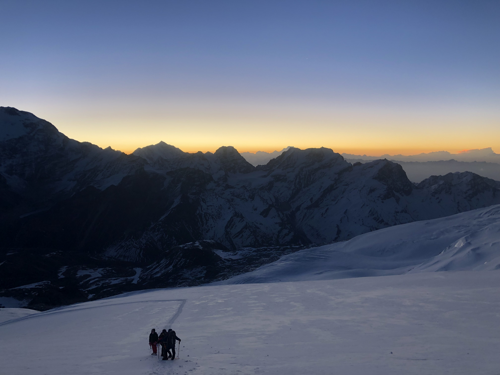
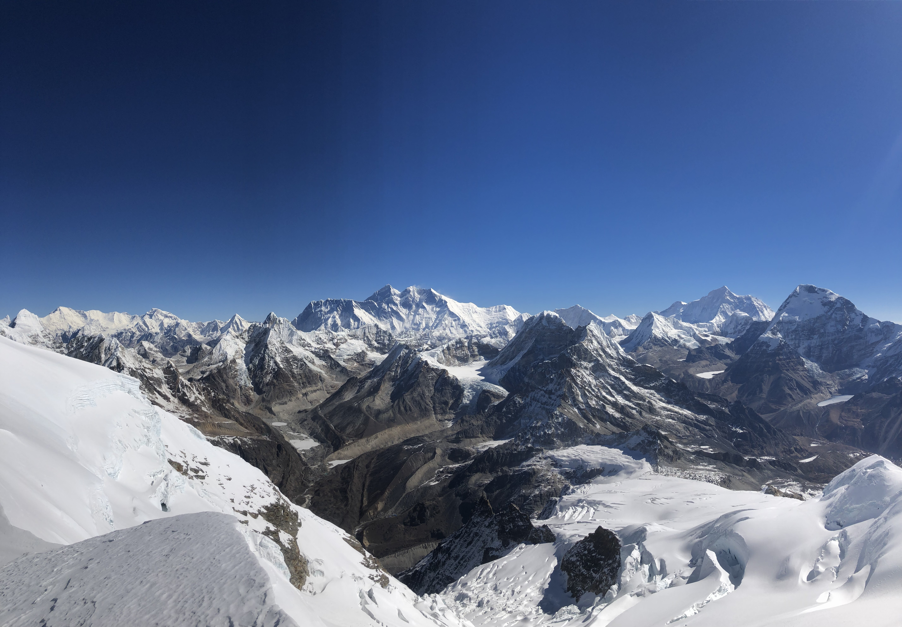
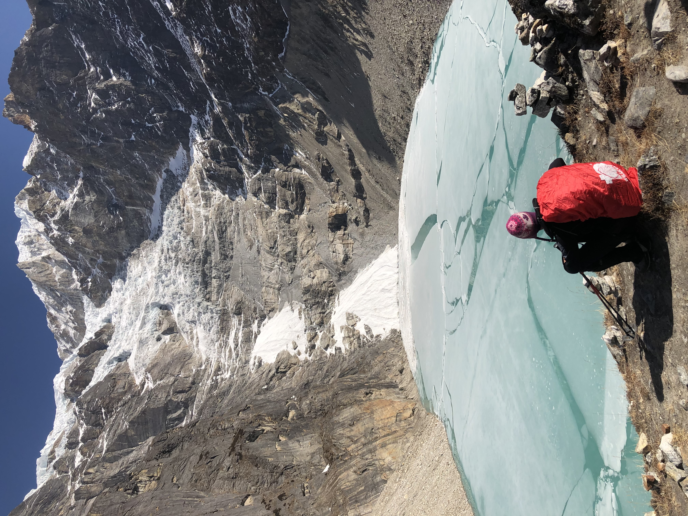
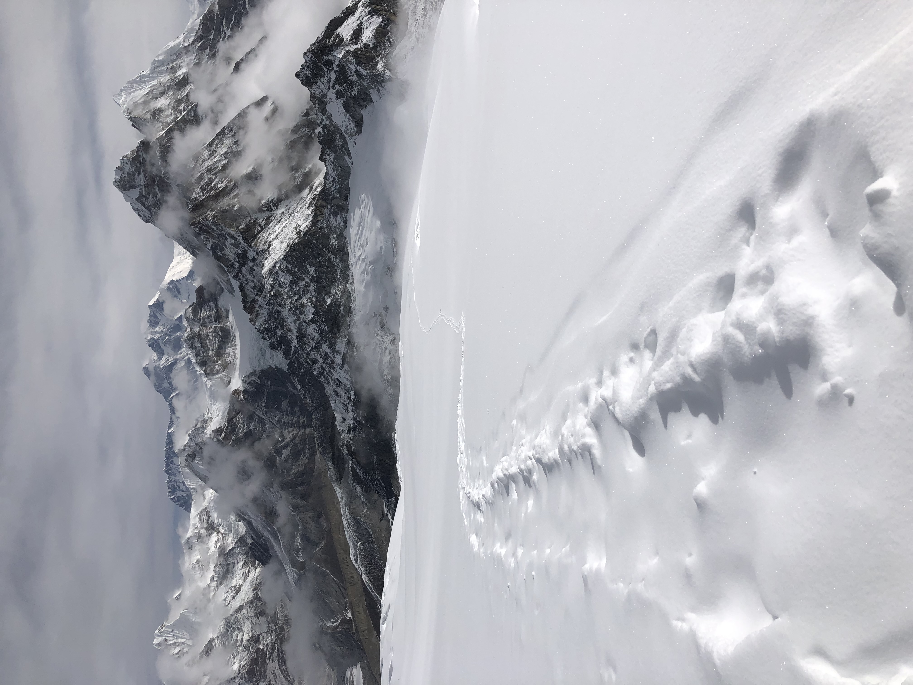
Key Trip Facts & Expedition Overview
Total Duration
18 Calendar Days
Summit Elevation
6,476 m / 21,247 ft
Climbing Grade
Alpine PD (Strenuous Glaciated)
Trekking Region
Remote Hinku Valley & Khumbu
Approach Route
Lukla – Chutanga – Zatrwa La
Glacier School Base
Khare (5,045 m)
Overnight High Point
Mera High Camp (5,780 m)
Accommodation
Teahouse Lodges + High Camp Tents
Acclimatization Stays
Thangnak (Day 7) & Khare (Day 9)
Contingency Days
2 Buffer Days (Day 12 & Day 17)
Climbing Team
UIAGM/NMA Sherpas (1:2 Ratio)
DoT Royalty (Sep 2025)
Spring: $350 | Autumn: $175
Expedition Overview & Key Facts
Mera Peak Climbing is an 18-calendar-day Himalayan mountaineering expedition designed for adventurous travelers seeking to stand atop a summit above 6,000 metres in Nepal. Rising to a commonly cited elevation of approximately 6,476 metres (21,247 ft), Mera Peak offers an inspiring combination of rugged high-altitude trekking, glacier travel, mountaineering training, and a summit attempt surrounded by some of the most impressive mountain landscapes on Earth.
This comprehensive package takes you from Kathmandu into the Khumbu region and the wild, remote Hinku Valley. Following a classic trekking approach through Chutanga, Zatrwa La (4,600 m), Kothe (3,600 m), Thangnak (4,350 m), and Khare (5,045 m) before approaching Mera High Camp (5,780 m), the expedition integrates structured acclimatization, practical climbing preparation, and a built-in field contingency day to accommodate weather and operational conditions.
Unlike a standard trekking holiday, Mera Peak requires preparation for sustained physical effort, sub-zero alpine conditions, basic tent facilities at High Camp, and the demands of roped climbing on snow and glacier terrain. Although it is widely celebrated as Nepal's most accessible 6,000-metre trekking peak, it is a serious mountaineering undertaking that should never be underestimated. Excellent endurance fitness, suitable technical gear, disciplined acclimatization, and experienced climbing Sherpa support are essential to a safe and successful ascent.
At Khare (5,045 m), climbers pause for acclimatization and supervised glacier practice before moving to High Camp. On summit day, teams depart under starlight around 2:00 AM to navigate the expansive glacier slopes, arriving at the summit ridge at dawn to witness an unforgettable panorama spanning Mount Everest, Lhotse, Makalu, Cho Oyu, and Kanchenjunga.
Mera Peak Climbing Duration & Route Summary
| Expedition Stage | Planned Days | Main Activities & Altitude Milestones |
|---|---|---|
| Stage 1: Arrival & Prep | Days 1–2 | Kathmandu arrival, expedition briefing, gear inspection, permit verification, and city sightseeing (1,350 m). |
| Stage 2: Approach Trek | Days 3–8 | Scenic flight to Lukla (2,850 m), trek to Chutanga (3,450 m), cross Zatrwa La (4,600 m) to Thuli Kharka, descend to Kothe, trek through Thangnak (4,350 m) with acclimatization stay, and reach Khare (5,045 m). |
| Stage 3: Climbing & Summit | Days 9–12 | Glacier training and skills review at Khare, ascent to Mera High Camp (5,780 m), summit push to Mera Peak (6,476 m) with safe return to Khare, and dedicated movable weather contingency day. |
| Stage 4: Return Journey | Days 13–18 | Descent from Khare through Kothe to Thuli Kharka, re-crossing Zatrwa La back to Lukla, return flight to Kathmandu, reserve buffer day, and final departure. |
Top Expedition Experiences
Mera Peak Climbing Highlights
16 defining moments that make Mera Peak the ultimate Himalayan mountaineering adventure
Summit Milestone
01
The Mera Peak Summit at 6,476 Metres
Standing at approximately 6,476 metres (21,247 ft), Mera Peak offers an accessible yet deeply rewarding mountaineering objective, making it Nepal's premier trekking peak for ambitious climbers entering the world of high-altitude Himalayan summits.
Mountain Vista
02
Panoramic Five 8,000m Mountain Views
From the Mera summit ridge and High Camp, take in an unprecedented 360-degree panorama of five of the world's six highest mountains: Mount Everest (8,848m), Lhotse (8,516m), Makalu (8,485m), Cho Oyu (8,188m), and Kanchenjunga (8,586m).
Wilderness Valley
03
Trekking Through the Remote Hinku Valley
Unlike the heavily frequented Everest Base Camp highway, the pristine Hinku Valley offers secluded wilderness trails, towering granite canyons, dense virgin forests, and dramatic glacial moraines untouched by commercial mass tourism.
High Mountain Pass
04
Crossing Zatrwa La (4,600m)
Traversing the rugged Zatrwa La pass at 4,600 metres provides an exhilarating mountain crossing, dramatic ridgeline vistas of the Dudh Koshi basin, and essential early acclimatization for the high expedition stages ahead.
Sherpa Heritage
05
Experiencing Traditional Mountain Settlements
Journey through tranquil alpine settlements including Chutanga, Kothe, and Thangnak, visiting the ancient 200-year-old Lungsumgba Buddhist monastery embedded beneath a massive granite rock face.
Staged Adaptation
06
Gradual Progression Toward High Mountains
The 18-day itinerary ensures progressive altitude gain from lush sub-alpine rhododendron and pine forests through alpine meadows and rocky lateral moraines to permanent glacier fields.
Glacier Skills
07
Acclimatization & Climbing Practice at Khare
Khare (5,045m) serves as the primary expedition training base. Trekkers spend dedicated days adjusting to altitude, checking boots and crampons, and practicing roped-travel, fixed-line ascents with jumars, and safe rappel techniques.
Expedition Camping
08
The High-Altitude Experience at Mera High Camp
Perched dramatically at 5,780 metres on a rocky shelf above the Mera glacier icefall, Mera High Camp provides a breathtaking sunset view over Everest and Makalu, with full expedition tents, warm dining, and kitchen support.
Roped Glacier Travel
09
A Guided Glacier & Mountaineering Experience
Travel linked by safety ropes across snow ramps and gentle glacier terrain under the direct supervision of certified UIAGM/NMA climbing Sherpa guides maintaining a safe 1:2 to 1:3 climber-to-guide ratio.
Skill Bridge
10
Seamless Combination of Trekking & Mountaineering
Mera Peak strikes the ultimate balance between scenic mountain trekking and authentic alpine mountaineering, requiring no prior technical rock or ice climbing experience while instilling real mountaineering competence.
Personal Achievement
11
Attempting a First 6,000-Metre Himalayan Summit
Ascending beyond the 6,000m barrier tests physical stamina, mental resilience, and pacing in extreme thin air, providing an immense sense of personal accomplishment upon touching the summit prayer flags.
Alpine Ecology
12
Wildlife & Changing Himalayan Ecosystems
Traverse Makalu-Barun National Park buffer zones home to Himalayan thar, musk deer, snow leopards, blood pheasants, and blooming spring rhododendrons against cascading glacial streams.
Ethical Travel
13
Cultural Respect & Responsible Expedition Ethos
Engage respectfully with indigenous Rai and Sherpa communities, observe Buddhist trail customs around mani walls, and support fair-wage, fully insured porters and local teahouse families.
Safety Buffer
14
Planned Field Contingency Day for Summit Flexibility
A built-in movable reserve day (Day 12) at Khare ensures that unpredictable mountain weather, high winds, or individual acclimatization adjustments do not compromise summit safety or mission success.
End-to-End Care
15
Organized Expedition Support from Start to Finish
From airport transfers in Kathmandu to hotel accommodations, internal flights, climbing permits, high-camp food service, and satellite emergency communications, every logistical detail is handled seamlessly.
Grand Adventure
16
An 18-Day Journey into the High Himalayas
A comprehensively staged calendar that balances physical challenge, safety, acclimatization, summit success, and post-summit flight contingencies for a truly once-in-a-lifetime Himalayan experience.
Why Choose Our Guided Mera Peak Climbing Package?
Dedicated Sherpa leadership, premium expedition infrastructure, and safety-first protocols
UIAGM / NMA Sherpa Leaders
Our climbing guides are certified mountaineers with multiple 6,000m to 8,000m summits, maintaining a close 1:2 to 1:3 summit guide ratio.
Structured Glacier Training
A full acclimatization and practice day at Khare ensures hands-on instruction in crampons, harness systems, fixed lines, and rappelling before High Camp.
Dual Contingency Buffer
Includes a flexible high-mountain reserve day (Day 12) plus a Kathmandu contingency day (Day 17) to safeguard against weather delays and flight shifts.
Ethical Porter & Staff Welfare
Every porter and crew member receives fair living wages, quality high-altitude gear, medical coverage, and strict load limits compliant with IPPG standards.
Mera Peak Climbing Itinerary: Day by Day Details
Our 18-day Mera Peak expedition itinerary is engineered with precision around gradual physiological acclimatization, technical preparation, and mountain safety. Following a classic trekking approach through Chutanga and over the high mountain pass of Zatrwa La (4,600 m), the trail descends into the untouched, pristine wilderness of the Hinku Valley, progressing through Kothe (3,600 m), Thangnak (4,350 m), and Khare Base Camp at 5,045 m (16,551 ft).
The itinerary includes dedicated acclimatization stays at Thangnak, supervised glacier skills training at Khare, an overnight at Mera High Camp (5,780 m), our 2:00 AM summit push to Mera Peak (6,476 m), a built-in Day 12 field contingency day for weather flexibility, and a scenic return traverse back over Zatrwa La to Lukla and Kathmandu.
Daily walking times and stage distances are approximate reference values. Pacing is carefully managed by our certified UIAGM/NMA Climbing Sherpas based on group fitness, altitude response, and prevailing snow conditions to maximize comfort, safety, and summit success.
Before Your Mera Peak Expedition Starts
The departure date you select is your arrival date in Kathmandu (Day 1). Day 2 is fully dedicated to official expedition permits, personal gear audits, and technical climbing briefings before flying to Lukla on Day 3.
During your pre-trip briefing in Kathmandu, your lead Climbing Sherpa will review the daily profile, cold weather gear protocols, rope techniques, emergency evacuation procedures, and answer any final questions. Missing items can be rented or purchased in Thamel with professional guidance.
During peak trekking windows (October–November and April–May), Nepal's Civil Aviation Authority may route Lukla flights via Manthali/Ramechhap Airport (a scenic 4-hour pre-dawn drive from Kathmandu). We handle all ground logistics, private vehicle transfers, and flight boarding arrangements seamlessly.
Day 1: Arrival in Kathmandu and transfer to the hotel
Elevation: Approximately 1,350 m
Duration: Full day schedule / transfers
Accommodation: Hotel in Kathmandu
Stage: Kathmandu Staging
Your Mera Peak Climbing expedition begins with your arrival in Kathmandu, Nepal's capital and the main preparation point for the journey into the Himalayas. After landing at Tribhuvan International Airport, complete the immigration and baggage formalities before meeting the arranged airport representative, if this service is included in your package. You will then transfer to your hotel in Kathmandu, where you can settle in, recover from your journey, and organize your personal belongings before the expedition begins.
Kathmandu sits at approximately 1,350 m above sea level, making it a relatively low-elevation starting point compared with the mountain stages ahead. The first day is intentionally kept light so that you have time to rest after international travel. Depending on your arrival time, traffic, and how you feel, you may have an opportunity to walk around the nearby streets, find a meal, or purchase small items that you may have forgotten. Avoid leaving essential equipment shopping until the last moment, however, because specialist climbing gear may not always be available in the correct size or condition.
The expedition team will normally confirm the arrangements for the following days, including the planned domestic flight to Lukla, the route through Chutanga and Zatrwa La, and the expected trekking and climbing stages. Keep your passport, travel insurance details, emergency contact information, and any documents requested for permit processing in an accessible place. If the package requires passport photographs or additional personal details for permits, confirm that these are available before leaving Kathmandu.
This is also a good time to tell the guide or trip coordinator about any dietary requirements, medication needs, equipment concerns, or relevant health issues that could affect the trek. High-altitude climbing requires honest communication: the team needs to know about problems early enough to assess the plan responsibly. If you have arrived tired, focus on hydration, eating adequately, and getting a reasonable night's sleep rather than adding strenuous activities to the day.
Accommodation is usually in a Kathmandu hotel according to the category and room arrangement confirmed at booking. Meals on arrival day depend on the package inclusions and your arrival time, so check whether dinner is included or needs to be arranged independently. The day ends with rest and preparation for the expedition briefing and equipment review. Starting the trip calmly helps you begin the next stage with the documents, clothing, and personal arrangements in order.
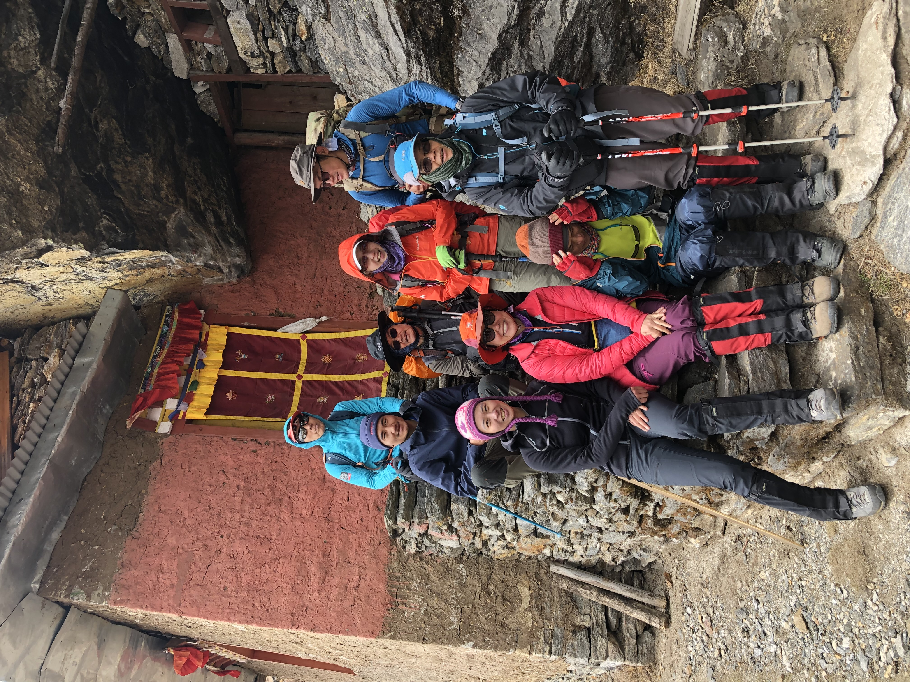
Day 2: Kathmandu sightseeing and expedition preparation
Elevation: Approximately 1,350 m
Duration: Full day schedule / transfers
Accommodation: Hotel in Kathmandu
Stage: Kathmandu Staging
The second day is reserved for preparation before heading into the mountain region. Depending on the confirmed package and the timing of your Lukla flight, the day may include a guided sightseeing visit to selected cultural landmarks in Kathmandu, time for equipment checks, and a briefing about the Mera Peak Climbing itinerary. If the flight schedule requires an early departure or if important preparation tasks remain outstanding, the team may prioritize logistics over sightseeing.
Kathmandu offers a chance to experience Nepal's cultural heritage before the expedition moves into remote mountain terrain. If sightseeing is included, the itinerary may cover selected historic squares, temples, stupas, or traditional neighborhoods. Visits depend on opening arrangements, traffic, available time, and the final schedule. Respect local customs at religious sites, follow any photography restrictions, and wear clothing appropriate to the places visited. Sightseeing should remain flexible and should not interfere with the essential preparations for the climb.
The equipment review is one of the most important tasks of the day. Check your trekking boots, warm layers, waterproof clothing, gloves, headwear, sunglasses, sleeping equipment, and daypack. Technical items required for the climbing stage must also be accounted for. Depending on the route and package, these may include mountaineering boots, crampons, an ice axe, a climbing harness, carabiners, and ascending or descending equipment. Confirm which items are supplied by the expedition team, which can be rented, and which you must bring yourself. Do not assume that every technical item is included simply because the trip is sold as a guided climbing package.
The briefing should cover the route through Lukla, Chutanga, Zatrwa La, Kothe, Thangnak, and Khare, as well as the plan for Mera High Camp and the summit attempt. Discuss expected walking hours, approximate elevations, accommodation standards, meal arrangements, baggage limits, and communication procedures. The guide should explain that the summit attempt depends on weather, snow and ice conditions, acclimatization, and each participant's health. A scheduled summit day is a plan, not a guarantee.
Review the permit and travel documentation requirements with the team and confirm the domestic flight arrangements. Lukla flights can be affected by weather and operating conditions, and some schedules may involve road transfers to an alternative departure airport. Ask how such changes are handled and what expenses may fall outside the package. The day is also the right time to disclose concerns about equipment fit, fitness, or health. After completing the necessary arrangements, return to the hotel, prepare your trekking bag, and rest before the flight to Lukla and the start of the approach trek.
Review the initial sleeping-altitude progression before departure. The printed plan moves from Kathmandu to a Chutanga night around 3,400–3,500 m on the flight-and-walking day. Confirm a suitable staging plan with the expedition team; a short walking time does not establish altitude readiness.
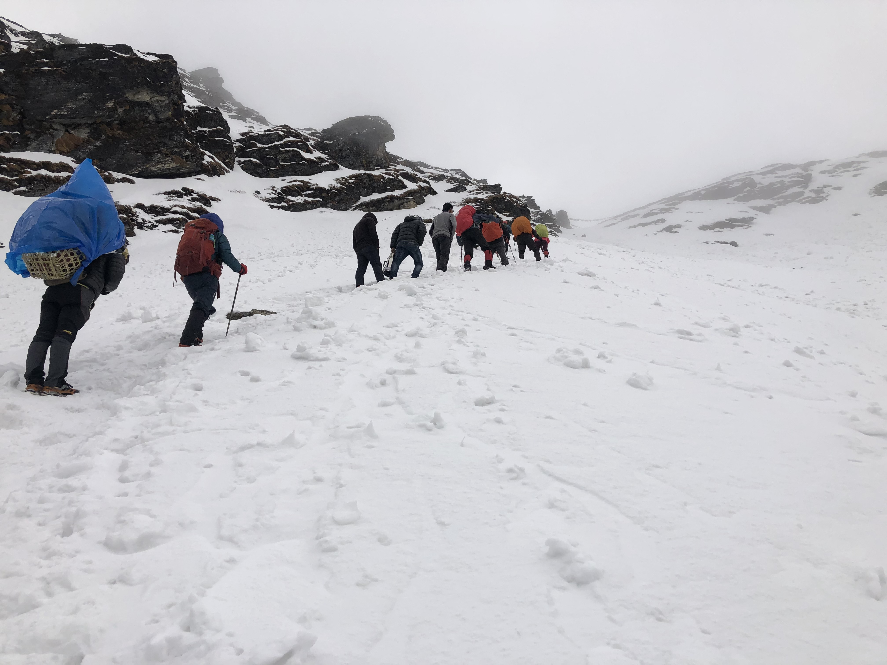
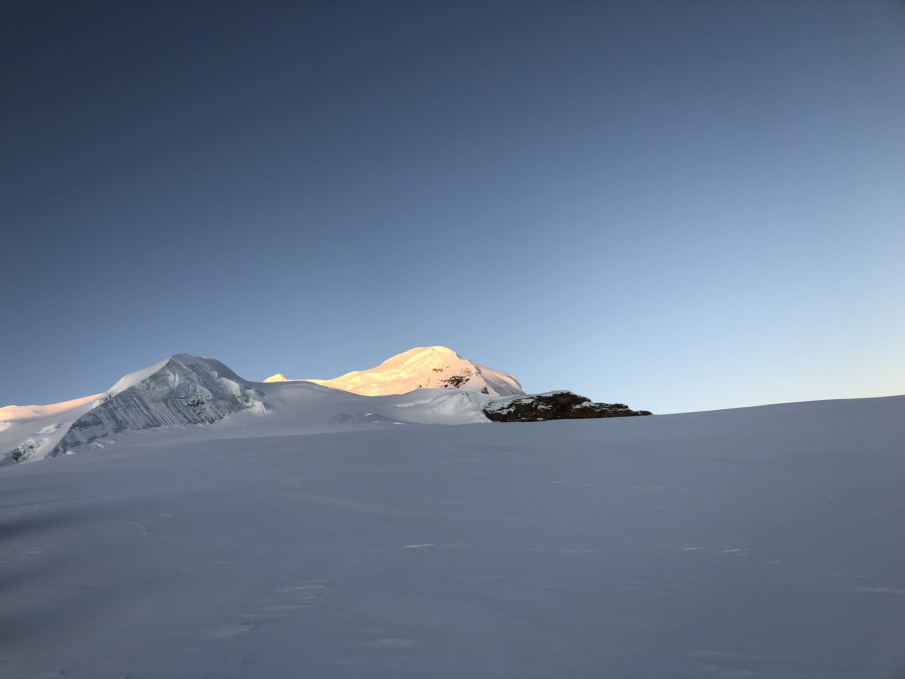
Day 3: Fly to Lukla and trek to Chutanga
Elevation: Lukla, approximately 2,850 m; Chutanga, approximately 3,400 to 3,500 m
Duration: Approximately 3 to 4 hours
Accommodation: Teahouse or lodge
Stage: Hinku Valley Approach
After breakfast, you will prepare for the domestic flight to Lukla, the main gateway for the Mera Peak approach on this itinerary. The flight is usually short, but the schedule depends on the operating airport, weather, and aviation conditions. In some periods, travelers may need to transfer by road to Ramechhap for the flight rather than departing directly from Kathmandu. Follow the confirmed departure instructions and keep essential medication, documents, valuables, and a small set of personal necessities in your daypack in case checked baggage is delayed.
Lukla lies at approximately 2,850 m and is surrounded by steep hills and mountain scenery. After landing, the team will organize the baggage and confirm the walking plan before starting the trek. The first stage heads toward Chutanga, a mountain stopping area commonly located around 3,400 to 3,500 m, depending on the lodge and precise overnight point. The trail gradually leaves the busy gateway behind and enters a more forested environment, with uphill sections that provide the first sustained walking of the expedition.
The walk may take around three to four hours, although pace, trail conditions, and the exact starting point affect the duration. Even though the distance is relatively modest, the elevation gain can make the day feel more demanding than an ordinary low-altitude hike. Walk at a steady pace, drink water regularly, and avoid racing ahead of the group. The objective is to reach the overnight stop comfortably while beginning to adapt to the trekking rhythm.
Chutanga is a useful transition point between Lukla and the higher pass crossing planned for the following day. Facilities are generally basic, and accommodation may be in a local lodge or teahouse depending on availability. Once you arrive, take time to rest, organize your equipment, and ask the guide about the next day's ascent toward Zatrwa La. The pass is high, so clothing layers, waterproof protection, gloves, and suitable footwear should be readily accessible rather than packed at the bottom of your bag.
The early route includes a relatively quick progression to higher elevations, which makes the guide's assessment of the group's condition especially important. Tell the guide promptly if you develop a headache, nausea, dizziness, unusual fatigue, or other symptoms that concern you. Such symptoms should not be ignored or concealed to keep to the schedule. The group should review the weather forecast and trail conditions before committing to the next stage.
Dinner and overnight accommodation are arranged at Chutanga according to the package. This first trekking night is an opportunity to get used to the basic mountain-lodge environment and prepare for an important day. Pack for the morning before going to bed, keep a headlamp and warm clothing accessible, and aim for adequate rest. The next stage includes a high pass and a descent toward the Hinku Valley, so an early start and a controlled pace will be important.
The printed Day 4 night around 4,300–4,320 m is about 800–920 m above the stated Chutanga range. Confirm the exact lodge and health-led staging before committing to Zatrwa La. A pass crossing is conditional; do not proceed upward with altitude symptoms.
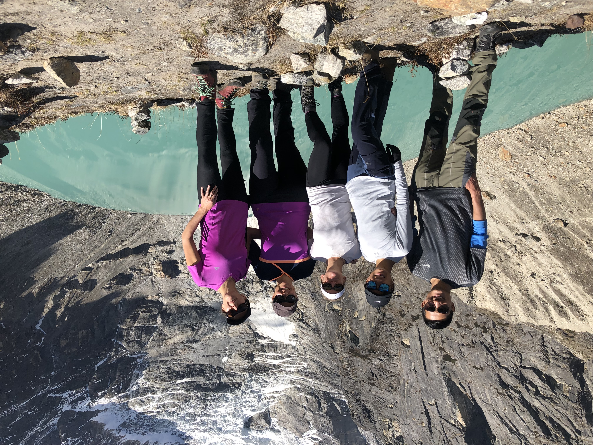
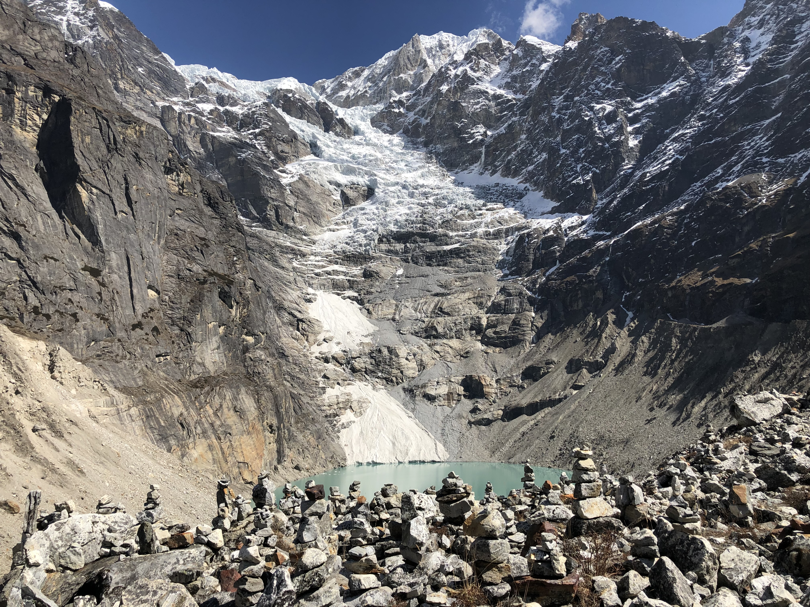
Day 4: Cross Zatrwa La and continue to Thuli Kharka or Zatrabok
Max: Zatrwa La, approximately 4,600 m • Overnight: Approximately 4,300 to 4,320 m
Duration: Approximately 6 hours, potentially longer
Accommodation: Basic mountain lodge, subject to availability
Stage: Hinku Valley Approach
Today is one of the most demanding stages of the approach because the route climbs from the Chutanga area toward Zatrwa La, a high pass commonly listed at approximately 4,600 m, before descending toward Thuli Kharka or the designated overnight location near Zatrabok. The exact trail, stopping point, and elevation depend on the operating itinerary and current conditions. Because the route gains elevation quickly early in the trip, the guide should assess the group's readiness and the weather before beginning the crossing.
The ascent follows mountain trails through increasingly exposed terrain. The effort can feel substantial because the air contains less available oxygen than at lower elevations, and steep sections may require frequent short breaks. Keep a measured pace, follow the guide's instructions, and avoid unnecessary rushing. Weather may change rapidly around the pass, and wind, cloud, snow, or ice can affect visibility and footing. Warm layers, waterproof protection, gloves, and suitable footwear should be ready before departure. Use trekking poles if they help with balance and stability.
At the pass, views may open toward the surrounding Himalayan landscape when visibility is favorable. The stop should remain guided by conditions and safety rather than by a desire to spend a long time at the highest point. After crossing Zatrwa La, the trail descends toward the overnight area. Descending can be hard on the knees and may be difficult on loose, wet, or icy surfaces, so maintain control and leave adequate space between trekkers where the path is narrow.
This stage is a key point for managing altitude. The pass elevation is considerably higher than the previous night's sleeping altitude, and not everyone responds to ascent in the same way. Inform the guide if you experience symptoms such as headache, nausea, dizziness, unusual breathlessness at rest, or a noticeable decline in coordination. The guide may change the pace, stop the ascent, or revise the plan if the group's condition or the weather makes continuing unsafe. The itinerary should not be followed mechanically at the expense of safety.
The planned walking time is around six hours, but the day can take longer depending on conditions, breaks, and the overnight destination. Facilities at Thuli Kharka or Zatrabok are generally basic, and the exact lodge arrangement should be confirmed in the package. After arrival, drink fluids, eat adequately, keep warm, and rest. The guide may review the following day's descent into the Hinku Valley and explain what to expect as the route moves toward Kothe. This is a demanding pass day, and a calm evening with enough food, hydration, and rest will help prepare you for the next stage.
Day 5: Trek from Thuli Kharka to Kothe
Elevation: 1,350 m to 6,476 m
Duration: Approximately 5 to 6 hours
Accommodation: Teahouse or lodge
Stage: Hinku Valley Approach
Destination elevation: Approximately 3,600 m
After breakfast, the route continues from the Thuli Kharka or Zatrabok area toward Kothe, descending from the high mountain terrain into the Hinku Valley. The overnight elevation at Kothe is commonly around 3,600 m, although the exact location may vary. Compared with the previous day's pass crossing, today's route generally loses elevation, but it still involves several hours of walking on uneven mountain trails.
The trail descends through changing landscapes, including open slopes, rocky sections, and forested areas as the route moves lower. Views of the surrounding ridges and mountains may appear between trees and along more open parts of the trail. The environment gradually becomes less exposed than the high pass, although weather can still change and shaded sections may remain damp or slippery. Take care on descents, especially where stones or roots make the footing uneven.
The walk commonly takes around five to six hours, depending on pace, trail conditions, and the exact overnight stop. After the effort of crossing Zatrwa La, it is important to avoid treating the descent as an effortless recovery day. Long downhill sections can place stress on the knees and ankles, and fatigue from the previous stage may still be noticeable. Use trekking poles if useful, keep your pack secure, and take breaks when needed without allowing the group to become excessively spread out.
Kothe is an important settlement on the approach to Mera Peak and provides a stopping point before the route climbs farther into the upper Hinku Valley. Accommodation is typically in a local lodge or teahouse, subject to availability and the package arrangement. The facilities are more limited than in Kathmandu, and comfort standards can vary. Meal options generally focus on practical trekking food that can be prepared with the supplies available in the region.
The lower overnight elevation may provide some relief after the previous day's high pass, but it does not remove the need to monitor altitude-related symptoms. Continue drinking water, eat sufficient food, and inform the guide if you feel unwell or unusually exhausted. The group should also review its supplies and confirm the following day's plan toward Thangnak, where the route will return to a higher elevation.
The day's main objective is to descend safely, recover from the pass crossing, and continue the approach without rushing. After reaching Kothe, organize your clothing and equipment for the next stage, when the trail climbs farther into the Hinku Valley. Rest well and keep essential items accessible for the morning departure.
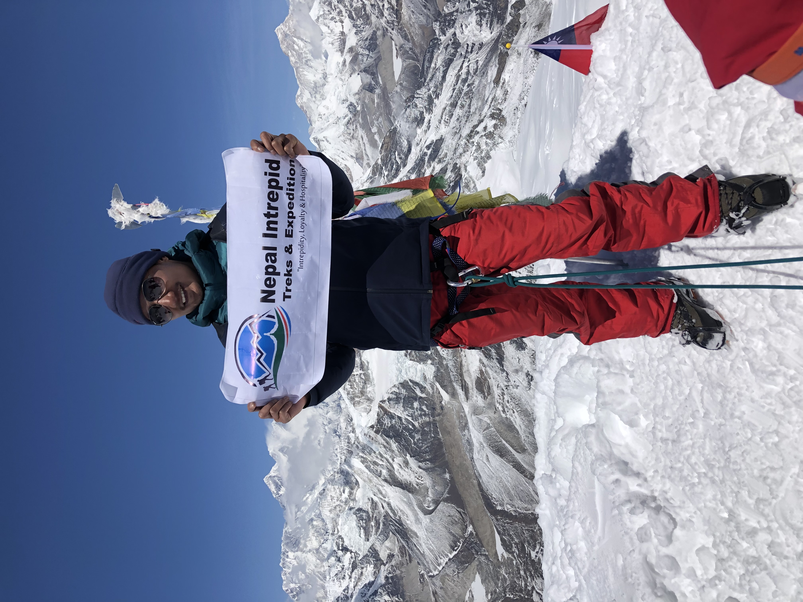
Day 6: Trek from Kothe to Thangnak
Elevation: 1,350 m to 6,476 m
Duration: Approximately 4 to 5 hours
Accommodation: Teahouse or lodge
Stage: Hinku Valley Approach
Destination elevation: Approximately 4,350 m
The trek from Kothe to Thangnak continues deeper into the Hinku Valley and brings the expedition back to higher elevations. Thangnak, also written as Tangnang or Thaknak in some route descriptions, is commonly situated around 4,350 m. This stage is an important transition from the lower valley toward the high-altitude terrain around Khare and the Mera Peak climbing area.
After breakfast, the group follows the valley trail through a landscape that gradually becomes more open and rugged. Forested sections give way to alpine vegetation, rocky slopes, and views of the surrounding mountain terrain. As the route gains elevation, the air becomes thinner and walking may feel slower than it did at lower elevations. The objective is to maintain a steady pace and reach Thangnak without unnecessary strain.
The walk is usually estimated at around four to five hours, though actual timing depends on trail conditions, stops, and individual pace. The route may include uneven ground and gradual ascents, so suitable footwear and attention to footing remain important. Keep rain protection and warm layers accessible because conditions can change even when the morning begins clear. Trekking poles can help with balance and reduce strain during longer sections.
Thangnak is an important stop in the itinerary because it allows the group to spend time at a higher sleeping elevation before continuing toward Khare. Accommodation is generally in a basic mountain lodge or teahouse, depending on availability. Facilities and menu choices are more limited than in larger settlements, and travelers should be prepared for a practical rather than luxurious stay.
The guide should explain the plan for the acclimatization day that follows. Depending on the group's condition and the weather, this may involve resting or taking a light walk at an appropriate elevation. The aim is to allow the body time to respond to the altitude, not to add unnecessary exertion. Acclimatization is individual, and the fact that the itinerary includes a rest day does not guarantee that everyone will adapt without difficulty.
At this elevation, it is especially important to report persistent headaches, nausea, dizziness, appetite loss, or unusual fatigue. Do not assume that symptoms are simply the normal result of walking. The guide should evaluate concerns and determine whether rest, a change in the plan, or descent is necessary.
After arriving at Thangnak, eat adequately, hydrate, and keep warm. Review the next day's activity with the guide and prepare only the equipment needed for any planned acclimatization walk. A measured approach at this stage supports the move toward Khare, where the expedition begins its more focused preparation for glacier travel and the summit attempt.
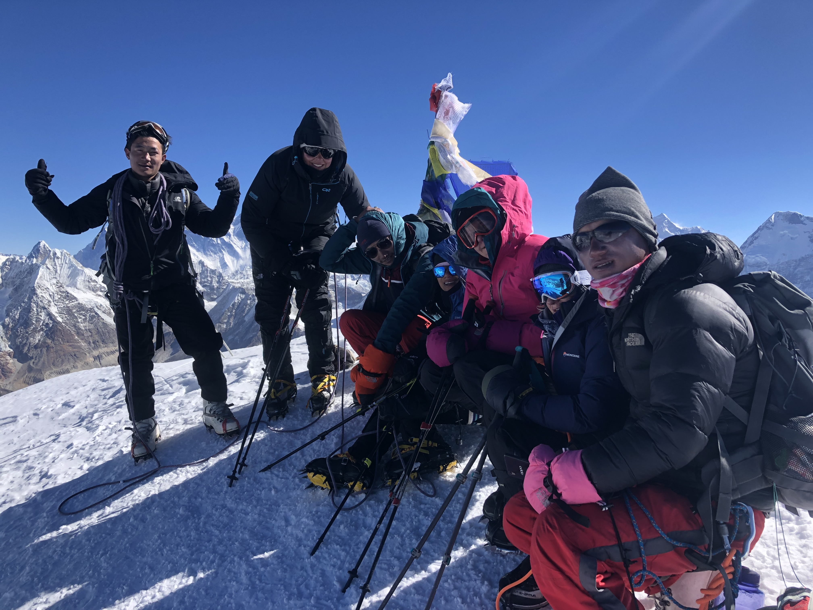
Day 7: Acclimatization day at Thangnak
Elevation: Approximately 4,350 m
Duration: Rest and suitable acclimatization walk
Accommodation: Teahouse or lodge
Stage: Hinku Valley Approach
This day is planned as an acclimatization stop at Thangnak, approximately 4,350 m above sea level. Rather than moving to a new overnight destination, the group spends additional time at the same elevation to support adjustment before continuing toward Khare. This is an important part of the itinerary because the route ahead climbs above 5,000 m, where physical effort becomes more demanding and altitude-related illness is a serious consideration.
The exact activities depend on the group's condition, weather, and the guide's assessment. A suitable plan may include rest, a short acclimatization walk, or a modest outing to gain some elevation before returning to the lodge. Any walk should remain appropriate to the group's health and the day's conditions. It is not a training competition, and the aim is not to exhaust yourself before the next ascent.
Use the day to recover from the previous stages, eat regular meals, drink fluids, and check personal equipment. Review your boots, socks, layers, waterproof clothing, gloves, headwear, sunglasses, and daypack. It is also useful to confirm that essential personal medication is accessible and that the guide knows about any symptoms or concerns. If technical equipment has already been distributed or is being arranged for the later climbing stages, ask the team to clarify what you will need to carry and what will be transported separately.
Acclimatization does not guarantee protection from altitude illness. People respond differently, and symptoms can occur even when the itinerary includes rest days. Report headache, nausea, dizziness, unusual weakness, or other concerning changes to the guide promptly. Symptoms that worsen or occur alongside difficulty walking, confusion, or breathlessness at rest require urgent assessment and may mean that ascent must stop and descent is necessary. Do not conceal symptoms because you want to preserve the planned summit schedule.
The day also offers time to understand the next stages. The trek to Khare gains further elevation, and Khare is the main preparation point before the route continues toward Mera High Camp. The guide can explain the expected terrain, approximate walking time, overnight facilities, and the arrangements for climbing practice. Questions about equipment, the summit-day plan, or the use of ropes and crampons should be raised before the team reaches the glacier environment.
Accommodation and meals remain at Thangnak according to the package. The day may feel quieter than a regular trekking stage, but it has a clear purpose: allow recovery, monitor health, and prepare responsibly for the higher route. Avoid strenuous independent excursions and follow the guide's instructions about activity and rest. The next day continues toward Khare, where the focus shifts more directly toward the Mera Peak climbing phase.
The source elevations of Thangnak around 4,350 m and Khare around 5,045 m imply about 695 m of sleeping-altitude gain. Retain the Thangnak acclimatization stay and review whether the individual needs slower staging or extra time.
Day 8: Trek from Thangnak to Khare
Elevation: 1,350 m to 6,476 m
Duration: Approximately 3 to 4 hours
Accommodation: Teahouse or lodge
Stage: Hinku Valley Approach
Destination elevation: Approximately 5,045 m
After the acclimatization stop at Thangnak, the expedition continues toward Khare, the main staging point for the Mera Peak climbing section. Khare is commonly located at approximately 5,045 m, making this one of the most significant elevation gains of the approach. The trail moves into increasingly rugged terrain, and the thinner air can make even a relatively short walking day feel strenuous.
The route follows the upper Hinku Valley through a landscape of rocky slopes, moraine, and open mountain terrain. Vegetation becomes sparse as the expedition gains height, and the scenery increasingly reflects the high-altitude environment. Depending on the route and conditions, the trail may include uneven surfaces and exposed sections where careful footing is important. The guide sets the pace and may adjust the schedule based on the group's condition.
The walking time is often estimated at around three to four hours, but the short duration should not be mistaken for an easy day. Altitude can reduce walking speed, and travelers may need more frequent breaks than they did at lower elevations. Walk steadily, avoid unnecessary bursts of effort, and keep warm layers and sun protection available. The combination of cold air and strong sunlight can make the environment uncomfortable if clothing and protection are not adjusted as conditions change.
Khare is a key location in the expedition because it provides access to the climbing preparation area before the ascent toward Mera High Camp. Accommodation is typically in a basic lodge or teahouse, subject to availability. Facilities are limited, and travelers should expect simpler rooms and fewer services than in Kathmandu or Lukla. Meal choices can also be more restricted because supplies must be transported into the region.
Upon arrival, allow time to rest and monitor how you feel at the new elevation. Inform the guide about any headache, nausea, dizziness, unusual fatigue, loss of coordination, or other symptoms. Do not assume that symptoms will resolve if you simply continue upward. The guide may recommend additional rest or a revised plan depending on the situation.
The team should also confirm the next day's acclimatization and climbing-practice schedule. Khare is where participants review the equipment and techniques relevant to the planned route, including crampon use, ice axe handling, harness fitting, and rope procedures where required. The precise training depends on current conditions and the group's experience.
After dinner, prepare for the following day without overexerting yourself. Keep technical equipment organized, check personal layers, and ensure that any essential medication is accessible. Reaching Khare marks an important transition: the expedition has completed much of the approach trek and is now preparing for the more specialized demands of high-altitude mountaineering.
Day 9: Acclimatization and climbing practice at Khare
Elevation: Approximately 5,045 m
Duration: Acclimatization, equipment checks, and climbing practice
Accommodation: Teahouse or lodge
Stage: High Camp & Summit Push
The day at Khare is dedicated to acclimatization, equipment checks, and practical preparation for the ascent toward Mera High Camp. At approximately 5,045 m, Khare is already a high-altitude environment, and the group should use the day carefully rather than treating it as an opportunity for strenuous training. The exact schedule depends on weather, the group's health, and the guide's assessment.
A climbing guide will review the equipment required for the planned route and explain how it should be fitted and used. Depending on the route and current snow and ice conditions, this may include mountaineering boots, crampons, an ice axe, a harness, carabiners, an ascender, a descender, and rope systems. Participants should check that their equipment fits correctly and understand which items they will carry personally and which are part of the group equipment.
Practical training may cover walking with crampons, maintaining balance with an ice axe, attaching and adjusting a harness, moving according to the guide's instructions, and understanding basic rope-team procedures. Where fixed ropes or ascending and descending devices are required, the guide should demonstrate the relevant techniques and ensure participants understand the instructions before the team proceeds. The training plan should reflect the actual route rather than assuming that every technique is needed on every departure.
The purpose of the session is to build familiarity and identify problems before the group reaches the higher climbing terrain. Incorrectly fitted boots, unsuitable gloves, missing equipment, or difficulty using a device can create significant problems in cold and exposed conditions. Address concerns while still at Khare, when there is more opportunity to adjust equipment or revise the plan.
Acclimatization remains a priority throughout the day. A practice session should be controlled and should not leave participants exhausted. Rest, regular food, adequate hydration, and symptom monitoring all matter at this elevation. Tell the guide promptly if you develop a headache, nausea, dizziness, unusual fatigue, or other symptoms that may indicate altitude illness. The team must consider health and readiness before continuing higher.
The guide should also discuss the next stage toward Mera High Camp, including the expected terrain, weather assessment, overnight arrangements, and the planned summit-day schedule. Participants should understand that the summit attempt is conditional on the group's health and the prevailing conditions. The presence of a scheduled summit day does not require the team to proceed if doing so would be unsafe.
Accommodation remains at Khare, normally in a basic mountain lodge or teahouse, depending on availability. Use the evening to organize your equipment, prepare warm clothing, and rest. Confirm the personal items that must be carried on the High Camp stage and make sure that headwear, gloves, eye protection, and waterproof layers are accessible. A well-managed preparation day helps the group approach the climbing stage with clearer expectations and better-organized equipment.
Khare around 5,045 m to High Camp around 5,780 m adds about 735 m of sleeping elevation. Confirm the actual campsite, support, food/fuel, sleeping system, weather window and health-led decision before moving higher. The Khare practice day does not guarantee readiness for High Camp.
Day 10: Trek from Khare to Mera High Camp
Elevation: 1,350 m to 6,476 m
Duration: Approximately 6 to 7 hours, depending on conditions
Accommodation: Expedition tents at High Camp
Stage: High Camp & Summit Push
Destination elevation: Approximately 5,780 m
Today the expedition leaves Khare and moves toward Mera High Camp, the final planned overnight staging point before the summit attempt. The route enters more exposed high-altitude terrain, where the trail may include rocky ground, moraine, snow, and glacier travel depending on the selected line and current conditions. Mera High Camp is commonly located at approximately 5,780 m, although the exact campsite and elevation can vary.
The ascent is physically demanding because the group gains elevation while carrying or managing the equipment required for the climbing stage. Walking may be slower than on the approach trek, and conditions can change quickly as the route moves higher. The guide determines the pace, equipment procedures, and whether the route is suitable to continue. Climbers should remain attentive, follow instructions, and avoid separating from the group.
The stage is often estimated at around six to seven hours, but actual duration depends on snow and ice conditions, route choice, group pace, and breaks. Some sections may require crampons, a harness, or rope procedures as directed by the climbing guide. Participants should use only the equipment and techniques they have been briefed on and should ask for clarification before proceeding if they are uncertain. The guide's assessment of the route and the group's condition takes priority over a fixed arrival time.
As the team approaches High Camp, the environment becomes increasingly exposed and facilities are limited. Accommodation is generally in expedition tents, supported by the camping and climbing crew according to the package arrangements. Food and hot drinks may be organized by the team, but the setting is far more basic than a trekking lodge. Confirm in advance whether a personal sleeping bag, sleeping mat, or other camping items are supplied or must be brought by each participant.
On arrival, the focus shifts to recovery and preparation for the summit attempt. The guide will review the expected departure time, weather conditions, equipment, clothing layers, and the procedures for moving together on the route. Participants should prepare their daypack carefully and keep essential items such as gloves, head protection, sunglasses or goggles, water, snacks, and personal medication accessible. Cold can make small tasks more difficult, so organizing equipment before resting is useful.
The summit attempt is usually planned for the following day, often with a pre-dawn start. The guide should explain the likely duration and the circumstances that would require a turnaround. The summit is not guaranteed, and the team may need to delay or cancel the attempt if weather, snow conditions, or participant health makes it unsafe.
After an early meal, rest as much as conditions allow. Sleep may be interrupted by altitude, cold, or the basic camp environment. Avoid unnecessary activity and communicate any symptoms promptly. The objective of this day is to reach High Camp safely and prepare responsibly for the summit attempt, not to expend every available reserve of energy before the most demanding stage.
Day 11: Mera Peak summit attempt and descent to Khare
Max: Commonly cited at approximately 6,476 m • Overnight: Approximately 5,780 m
Duration: Approximately 8 to 12 hours or longer
Accommodation: Khare if a safe descent is possible as planned
Stage: High Camp & Summit Push
Summit day is the central climbing objective of the Mera Peak expedition. The team normally starts before dawn from Mera High Camp, with the exact departure time determined by the guide according to weather, route conditions, and the planned ascent and descent. The commonly published summit elevation is approximately 6,476 m. At this altitude, low temperatures, reduced oxygen availability, and prolonged physical effort make the day substantially more demanding than an ordinary trekking stage.
Before leaving camp, check the equipment and clothing according to the guide's instructions. The team may use mountaineering boots, crampons, an ice axe, a harness, ropes, and other technical equipment required by the route and conditions. Carry sufficient water and snacks, and ensure that essential items are accessible. The guide should review the plan for group movement, communication, rest breaks, and the circumstances in which the team would turn around.
The ascent may follow snow and glacier terrain, with the exact line influenced by current conditions. Climbers must maintain a controlled pace, follow the guide's instructions, and remain attentive to footing and equipment. The air is thin, so progress can be slow even for fit participants. Cold, wind, changing visibility, snow conditions, fatigue, and altitude symptoms can all affect the team's ability to continue safely.
The duration of the ascent and descent is variable. A summit day is often estimated at around eight to twelve hours or longer, depending on the route, weather, group pace, and time spent on the mountain. The guide should continually assess whether sufficient time and energy remain for a safe descent. Reaching the summit is not the only objective; the group must also return safely to the planned overnight location.
From the summit area, climbers may have broad views of the Himalayan ranges when visibility is favorable. Peaks such as Everest, Lhotse, Makalu, Cho Oyu, and Kanchenjunga are often associated with the panorama, but visibility varies and should never be treated as guaranteed. Time at the summit may be limited by wind, cold, and the need to begin the descent.
The guide may stop the attempt or turn the group around if conditions become unsafe, a participant develops concerning symptoms, equipment problems arise, or progress is too slow to allow a safe return. Participants must be prepared to follow this decision even if they have invested considerable effort in reaching the upper route. A summit attempt is conditional, not a promise that every climber will reach the top.
After the climb, the team descends toward Khare if conditions and the group's state allow the planned return. The descent requires concentration because fatigue can affect balance and judgment. On arrival, participants can rest and recover at the lodge or designated accommodation. If the group cannot descend as planned, the guide must prioritize safety and arrange the appropriate alternative based on conditions and available support.
Day 12 remains a field contingency whose use and sleeping location depend on the revised climbing plan. It is not a guaranteed second summit attempt. Any change must still allow an appropriate descent and return arrangement.
Day 12: Contingency day for weather or summit delays
Elevation: 1,350 m to 6,476 m
Duration: Flexible summit schedule, recovery, or itinerary adjustment
Accommodation: According to the revised itinerary
Stage: High Camp & Summit Push
Location: Usually Khare or another location determined by the revised itinerary
The itinerary reserves this day for flexibility after the planned summit attempt. High-altitude climbing is sensitive to weather, snow and ice conditions, participant health, and the operational realities of remote mountain travel. A contingency day may provide an opportunity to adjust the summit schedule if the guide determines that conditions are suitable and the group remains fit to proceed.
The reserve day is not an automatic second summit attempt. Its use depends on what happened on the previous day, the current weather, the condition of the route, the availability of climbing support, and the health of each participant. If the first attempt was stopped because of a continuing hazard, repeating the attempt may remain inappropriate. The guide must evaluate the situation rather than treating the extra day as a requirement to reach the summit.
If the summit attempt has already been completed and no schedule adjustment is needed, the day may be used according to the confirmed itinerary. Depending on the operating plan, the group may rest at Khare or begin a revised descent if conditions and logistics allow. The actual arrangement should be confirmed with the expedition team, as the order of the following stages can change when the reserve day is used.
This day also allows time to assess how participants have recovered from the high-altitude climb. Fatigue, cold exposure, reduced appetite, and the physical demands of the descent may affect how people feel after summit day. Anyone with ongoing symptoms should inform the guide and receive appropriate assessment before the group continues. A traveler who is unwell should not be pressured to descend or climb at a pace that is unsafe for their condition; the guide must determine the safest practical plan.
The reserve day provides useful flexibility, but it cannot resolve every possible disruption. Extended bad weather, unsafe glacier conditions, illness, or transportation problems may require further changes and additional expenses. Travelers should understand the package's policy for extra accommodation, meals, staff, and transport costs if the itinerary extends beyond the planned duration.
Use the day to rest, eat adequately, hydrate, and organize personal equipment. If staying at Khare, keep warm and avoid unnecessary exertion. The guide can review the next stage toward Kothe and confirm the departure time, route conditions, and any changes to the planned overnight stops.
A contingency day is part of responsible expedition planning because it recognizes that mountain conditions cannot be controlled. Its purpose is to support sound decisions and schedule flexibility, not to guarantee a summit or eliminate the risks of high-altitude climbing.
Day 13: Trek from Khare to Kothe
Elevation: 1,350 m to 6,476 m
Duration: Approximately 5 to 7 hours
Accommodation: Teahouse or lodge
Stage: Descent & Return
Destination elevation: Approximately 3,600 m
After the climbing stage and the planned contingency arrangements, the expedition begins its return through the Hinku Valley, trekking from Khare toward Kothe. This stage descends from the upper mountain environment to a lower overnight elevation, with Kothe commonly located around 3,600 m. The descent is an important opportunity to move away from the highest elevations, but the group must still manage fatigue and uneven terrain carefully.
The trail retraces sections of the approach route through rocky ground and alpine landscapes before gradually reaching lower slopes. Views of the surrounding mountains may remain impressive, but the focus is now on safe movement and recovery after the summit attempt. Climbers can feel tired after a long day on the mountain, and the effects of altitude, cold, and reduced sleep may continue into the descent.
The walk is often estimated at around five to seven hours, depending on pace, route conditions, breaks, and the precise overnight location. Although much of the route is downhill, descending on rocky or loose surfaces can be demanding on the knees and ankles. Use trekking poles if helpful, maintain secure footing, and tell the guide if fatigue or pain is affecting your ability to walk safely. Do not rush simply because the group is moving to a lower elevation.
As the route descends, the landscape gradually changes. Exposed high-altitude terrain gives way to more sheltered valley sections, and the air may feel less demanding than around Khare. However, a lower elevation does not mean that all altitude-related concerns have disappeared. Continue monitoring symptoms and report any persistent headache, nausea, dizziness, unusual weakness, or other concerns.
Kothe provides a practical overnight stop along the Hinku Valley route. Accommodation is generally in a local lodge or teahouse, subject to availability and the package arrangements. Facilities may be basic, but the lower elevation and sheltered setting can make recovery more comfortable than at the upper camps. Meals are typically based on available trekking provisions, and the exact options depend on the lodge.
After arrival, take time to eat, hydrate, and rest. Review any personal equipment that needs drying or repacking, and inform the guide if you have blisters, injuries, or other issues that could affect the remaining walking days. The team should confirm the next day's route toward Thuli Kharka, including the expected ascent and overnight arrangements.
This stage marks the transition from the summit-focused part of the expedition to the return trek. The group still has a demanding route ahead, including another crossing of Zatrwa La before reaching Lukla. Rest and steady pacing remain important to ensure that the return is completed safely.
Day 14: Trek from Kothe to Thuli Kharka
Elevation: 1,350 m to 6,476 m
Duration: Approximately 6 to 7 hours
Accommodation: Teahouse or lodge, subject to availability
Stage: Descent & Return
Destination elevation: Approximately 4,200 to 4,300 m
The trek from Kothe to Thuli Kharka begins the return toward the high pass crossing on the way back to Lukla. After breakfast, the group leaves the Hinku Valley and follows a route that gains elevation toward the Thuli Kharka area, commonly around 4,200 to 4,300 m depending on the overnight location. The day's ascent follows the same general corridor used on the approach, but the group's pace may be affected by fatigue after the climbing section.
The route passes through changing mountain scenery, with forested sections and open slopes along the ascent. The trail may be uneven, and conditions can vary with season and recent weather. Some sections can be slippery when wet, while snow or ice may affect the higher portions during colder periods. Keep waterproof layers and warm clothing accessible, and follow the guide's instructions about the route and any changes required by current conditions.
Walking time is commonly estimated at around six to seven hours, but the actual duration depends on the trail, breaks, weather, and individual pace. The ascent can feel strenuous after several days of trekking and climbing, so maintaining a measured rhythm is important. Take regular short breaks when needed, eat and drink sufficiently, and avoid unnecessary racing to the overnight stop. The guide should monitor the group and adjust the pace to the participants' condition.
Thuli Kharka is an important staging point before the return crossing of Zatrwa La. Accommodation is usually in a basic mountain lodge or teahouse where available, although exact facilities and overnight locations can vary. The group should arrive with enough time to rest, eat, and prepare for the next day's high pass crossing.
The guide will review the weather and trail conditions before the crossing. The fact that the group has already crossed Zatrwa La on the approach does not guarantee that the return crossing will be straightforward. Wind, visibility, snow, ice, and the physical condition of the participants can change. If conditions are unsafe, the guide may alter the plan or delay the crossing rather than proceed simply to keep the original schedule.
Use the evening to organize warm clothing, gloves, waterproof protection, headwear, and any other items needed for the morning. Keep a headlamp and personal essentials accessible, and ensure that your footwear is in suitable condition. If you are experiencing unusual fatigue, pain, or altitude-related symptoms, tell the guide before the next day's departure.
The return ascent to Thuli Kharka is a significant walking day, but it also positions the group for the final mountain crossing and descent toward Lukla. A steady pace, adequate recovery, and a careful assessment of the next day's conditions help keep the return journey manageable.
Day 15: Cross Zatrwa La and trek to Lukla
Elevation: Zatrwa La, approximately 4,600 m
Duration: Approximately 6 to 8 hours
Accommodation: Lodge or hotel in Lukla
Stage: Descent & Return
Destination elevation: Lukla, approximately 2,850 m
The route from Thuli Kharka to Lukla crosses Zatrwa La again before descending toward the trekking gateway. The pass is commonly listed at approximately 4,600 m, and the day combines a high mountain crossing with a long descent. Although the group has already completed the summit attempt, this remains a physically demanding stage and should not be treated as a simple walk back to Lukla.
The morning begins with preparation for the pass. The guide checks the conditions and confirms the route, expected timing, and any equipment needed for the crossing. Cold temperatures, wind, snow, ice, or poor visibility can affect progress, so warm layers and waterproof protection should be readily accessible. The group should start at the time recommended by the guide and maintain a steady pace through the ascent.
At the pass, the team should keep the stop appropriate to the conditions. Exposure to wind and cold can make a prolonged break uncomfortable, and the descent may require concentration on loose or uneven terrain. Follow the guide's instructions, maintain safe spacing where necessary, and use trekking poles if they improve stability. The route descends toward Lukla through mountain trails and lower slopes, with the landscape gradually changing as the elevation decreases.
The full stage is often estimated at around six to eight hours, but the actual duration depends on the group's pace, trail conditions, weather, and stopping point. Fatigue can be significant after the previous days, so it is important to communicate honestly about your condition. Pain, severe tiredness, dizziness, or other symptoms that affect safe walking should be reported rather than concealed.
Returning to Lukla marks the end of the main trekking and climbing route, but the journey is not fully complete until the group has returned to Kathmandu. Accommodation is generally in a local lodge or hotel in Lukla, depending on the package. After arrival, the team may review the next day's flight arrangements and confirm the expected departure time.
Lukla flights are weather-dependent and can be delayed, rescheduled, or operated from an alternative airport depending on the season and operational arrangements. Keep essential belongings organized and retain enough flexibility for changes. If the flight schedule changes, follow the team's instructions rather than assuming that the original time will remain fixed.
The evening is an opportunity to rest after the final high pass, eat a proper meal, and prepare for the return flight. Check that personal items, documents, and equipment are accounted for before departure. The day's achievement is not only reaching Lukla but completing the return route after a demanding high-altitude expedition. A careful final crossing and descent are essential parts of the overall climbing experience.
Day 16: Fly from Lukla to Kathmandu
Elevation: 1,350 m to 6,476 m
Duration: Domestic flight and hotel transfer
Accommodation: Hotel in Kathmandu
Stage: Descent & Return
Destination elevation: Kathmandu, approximately 1,350 m
After breakfast, the group prepares for the scheduled flight from Lukla to Kathmandu, marking the return from the mountain region to Nepal's capital. The flight is usually short, but departure timing depends on weather, visibility, and aviation operations. In some operating periods, flights may use Ramechhap rather than Kathmandu as the departure or arrival airport, requiring a road transfer between the airport and the city. The exact arrangement should be confirmed by the team according to the current schedule.
Before leaving the accommodation, check your baggage and ensure that your passport, travel documents, valuables, and essential medication are accessible. Climbing equipment may need to be packed according to airline baggage rules, particularly if it includes sharp or technical items. The guide or coordinator can explain the arrangements for group equipment and any items that must be checked separately.
The flight offers a final aerial view of the mountain landscape when weather and visibility permit. However, travelers should be prepared for changes or delays. Lukla operations are particularly sensitive to weather, and a scheduled departure does not guarantee that the aircraft will operate at the planned time. The group may need to wait, change flight times, or adjust the onward transfer arrangements.
If the flight operates as planned, arrival in Kathmandu is followed by the transfer to the hotel included in the package. Once in the city, travelers can rest, organize their belongings, and enjoy a more comfortable environment after the remote trekking and climbing stages. Depending on the actual arrival time, the remainder of the day may be available for meals, personal errands, or a relaxed walk around the hotel area.
If the flight is delayed or canceled, the team will explain the available options according to the operating conditions. Additional accommodation, meals, road transport, or revised flights may involve extra costs depending on the package terms. A reserve day later in the itinerary provides some flexibility, but it cannot guarantee that every disruption can be absorbed without changes.
After checking in, take time to review your personal belongings and separate equipment that needs cleaning or drying. If you rented technical equipment, confirm the return arrangements with the team. Keep your travel documents and international flight details secure, especially if you have a fixed departure date.
The return to Kathmandu provides a transition from the expedition environment to ordinary travel arrangements. Even if the climbing objective has been completed, allow time to recover from the physical effort and avoid arranging activities that depend on an exact arrival time. The next day is reserved for leisure and schedule flexibility before the final departure.
Day 17 is Kathmandu flexibility for the planned Day 16 return, separate from field summit contingency. It can help absorb disruption but does not guarantee that every flight delay can be recovered before Day 18 departure.
Day 17: Leisure and contingency day in Kathmandu
Elevation: Approximately 1,350 m
Duration: Rest, optional sightseeing, and schedule flexibility
Accommodation: Hotel in Kathmandu
Stage: Descent & Return
Day 17 is planned as a leisure and contingency day in Kathmandu after the return from the Mera Peak region. If all transport has operated as expected and the group has returned to the city on schedule, the day offers time to rest, recover, and enjoy Kathmandu at a relaxed pace. It also provides some flexibility if earlier flight disruptions or operational changes have affected the itinerary.
After several days of trekking and climbing, a recovery day can be valuable. Travelers may want to sleep longer, enjoy a comfortable meal, organize photographs, or take a gentle walk around the city. If you choose to visit cultural sites or shops, consider your energy levels and allow sufficient time to return to the hotel. Any optional sightseeing or personal activity is subject to the package arrangement and may involve additional costs if not included.
The day can also be used to review the expedition and organize personal equipment. Check that rented gear has been returned, settle any outstanding expenses with the team, and confirm that your passport, travel documents, and flight details are ready for departure. If you have damaged or wet equipment, allow time to dry or pack it safely. Technical equipment should be packed in accordance with airline requirements, and any items that cannot be carried in cabin baggage should be placed in checked luggage where permitted.
The contingency function of this day is important because domestic flights from Lukla may be affected by weather or operating conditions. If the group reaches Kathmandu later than expected, this day may help absorb part of the delay. However, it is not a guarantee against every possible disruption. Extended flight cancellations or other problems may require additional nights, revised transport, or changes to international travel plans.
Travelers should understand the package's terms for additional accommodation, meals, transfers, and other expenses resulting from delays. It is also sensible to maintain communication with the airline for the international departure and avoid making assumptions based solely on the original itinerary. If the international flight is fixed, the team should be informed early about any transport disruption so that available alternatives can be considered.
If no contingency adjustment is needed, the day remains available for rest and independent activities. Kathmandu offers a range of cultural and dining options, but travelers should choose activities according to their interests and remaining energy. After a high-altitude expedition, hydration, adequate food, and sleep remain useful for recovery.
The day concludes with preparation for the final departure. Confirm the airport transfer time, pack luggage, and keep essential documents accessible. This flexible day helps create a more manageable transition from the mountains to onward international travel, while acknowledging that the actual schedule depends on flight operations and conditions.
Day 18: Final departure from Kathmandu
Elevation: Approximately 1,350 m
Duration: Hotel checkout and airport transfer
Accommodation: 3-Star Hotel in Kathmandu
Stage: Descent & Return
The final day of the Mera Peak Climbing itinerary is reserved for departure from Kathmandu. Depending on your international flight time, the arranged transfer will take you from the hotel to Tribhuvan International Airport. Confirm the pickup time with the trip coordinator and allow sufficient time for city traffic, airline check-in, security procedures, and any other formalities required for your journey.
Before leaving the hotel, check your room carefully and ensure that you have collected all personal belongings. Pay particular attention to your passport, travel documents, wallet, phone, chargers, medication, and any valuables stored separately during the expedition. Review your luggage to ensure that climbing equipment is packed appropriately and complies with airline requirements. If any rented equipment or group items remain with you, return them or confirm the correct handover arrangement before departure.
The morning schedule depends on your flight time, and there may be little opportunity for sightseeing or other activities if the departure is early. If you have extra time, use it to eat, organize documents, and confirm your transfer rather than planning an activity that could risk missing the flight. Travelers with onward connections should verify the current airline requirements and allow the necessary connection time.
If earlier weather or transport disruptions have changed the itinerary, the actual departure plan may differ from the original schedule. The team should explain any outstanding arrangements and confirm that all included services have been completed. Extra hotel nights, meals, transport, or international ticket changes arising from disruptions may be subject to the package terms and the relevant service providers' policies.
The expedition ends with the departure from Kathmandu, but the experience includes much more than the summit attempt. The route has involved the approach through Chutanga and the Hinku Valley, the crossing of Zatrwa La, acclimatization at Thangnak and Khare, equipment practice, the move to Mera High Camp, and the planned climb toward the summit. Each stage has required preparation, teamwork, and attention to changing mountain conditions.
Reaching the summit depends on weather, route conditions, acclimatization, and the guide's safety assessment. Whether or not the summit was reached, a responsible expedition prioritizes the well-being of participants and support staff throughout the journey. The descent and return to Kathmandu are important parts of the itinerary and should be completed with the same care as the ascent.
Once the airport transfer is complete, proceed with check-in and your onward travel arrangements. Keep copies of essential documents and contact details available until your journey is fully complete. This concludes the planned 18-day Mera Peak Climbing package, subject to any adjustments required by actual operating conditions.
Looking for a Tailor-Made Mera Peak Expedition?
Want a private climb, an extended traverse over Amphu Lapcha Pass into Everest, or custom departure dates? Tell us your group size and preferences — our alpine specialists will design the perfect custom expedition plan within 24 hours.
What is Included & Excluded in Mera Peak Climbing
We operate an honest, transparent expedition pricing model. All essential transportation, accommodations, meals, licensed staff, climbing royalties, and high-altitude emergency safety gear are included in your package with zero hidden surprises.
What is Included in Your 18-Day Package
Airport Transfers & Ground Transport
Personalized airport meet-and-greet in Kathmandu, private vehicle transfers to/from hotel, and ground transport for Lukla/Ramechhap flights.
Accommodation in Kathmandu
3 nights in a 3-star deluxe hotel in Kathmandu (twin-sharing) with complimentary daily breakfast and secure luggage storage.
Teahouse Lodging on Trek (13 Nights)
Clean twin-bedded lodge rooms along the approach and return route via Chutanga, Thuli Kharka, Kothe, Thangnak, and Khare.
High Camp Camping & Kitchen Infrastructure
1 night four-season North Face / Mountain Hardwear expedition tents at Mera High Camp (5,780 m) with insulated sleeping pads and dining tent.
All Meals During Trek & Mountain Stages
Nutritious breakfasts, trail lunches, warm dinners, hot tea/coffee, and fresh seasonal fruits after evening meals throughout the expedition.
Dedicated High Camp Kitchen Crew
Trained high-altitude kitchen staff preparing hot, calorie-dense meals, soup, and boiled drinking water at Mera High Camp.
Certified UIAGM / NMA Climbing Guides
Expert Sherpa climbing leaders with multiple high-altitude summits, conducting Khare glacier training with a 1:2 to 1:3 summit guide ratio.
Trekking Guide & Mountain Porter Support
Licensed English-speaking trekking guide plus ethical porters (1 porter for 2 trekkers, carrying up to 20–25 kg total luggage) fully equipped and insured.
Domestic Flights: Kathmandu / Lukla Return
Scheduled return flights between Kathmandu/Ramechhap and Lukla including 15 kg luggage allowance (10 kg check-in + 5 kg hand carry).
All Climbing Permits & National Park Fees
Official Mera Peak Climbing Permit (DoT / NMA royalty), Makalu-Barun National Park entry fee, Sagarmatha National Park entry fee, and local Khumbu permits.
Group Climbing Gear & Safety System
Dynamic climbing ropes, fixed lines, snow bars, ice screws, comprehensive medical first-aid kit, pulse oximeter, and emergency oxygen bottle support.
Contingency Staging & Farewell Dinner
Movable mountain weather contingency day (Day 12), Kathmandu buffer day (Day 17), climbing achievement certificate, and farewell cultural feast.
What is Not Included in the Package
International Airfare & Airport Taxes
Flights to and from your home country to Kathmandu (Tribhuvan International Airport - KTM).
Nepal Tourist Entry Visa
Payable upon arrival at Kathmandu airport ($30 USD for 15 days, $50 USD for 30 days, or $125 USD for 90 days).
Personal Technical Climbing Equipment
Double climbing boots, crampons, ice axe, harness, helmet, ascender, and descender. (Quality equipment is available for hire in Kathmandu or Khare).
Mountaineering & Helicopter Rescue Insurance
Mandatory policy covering high-altitude mountaineering with ropes and crampons up to 6,500 m and emergency helicopter evacuation.
City Meals in Kathmandu
Lunch and dinner in Kathmandu during non-expedition staging days (budget approximately $15–$25 USD per day).
Teahouse Extras & Personal Amenities
Hot showers, electronic device charging fees, Wi-Fi scratch cards, bottled water, canned soda, and alcoholic beverages.
Staff Tips & Gratuities
Customary tips for climbing Sherpa guides, trekking guide, porters, and kitchen crew (recommended $180–$250 USD total per climber).
Extra Days Due to Severe Weather
Accommodation, food, or additional helicopter chartered flights incurred beyond the scheduled 18-day itinerary.
Booking Dates & Availability for Mera Peak Climb
25
MAR
Mar 25 – Apr 11, 2026
AVAILABLE
$1,850 pp
05
APR
Apr 05 – Apr 22, 2026
GUARANTEED
$1,850 pp
15
APR
Apr 15 – May 02, 2026
AVAILABLE
$1,850 pp
25
APR
Apr 25 – May 12, 2026
AVAILABLE
$1,850 pp
02
MAY
May 02 – May 19, 2026
GUARANTEED
$1,850 pp
12
MAY
May 12 – May 29, 2026
AVAILABLE
$1,850 pp
15
SEP
Sep 15 – Oct 02, 2026
AVAILABLE
$1,850 pp
25
SEP
Sep 25 – Oct 12, 2026
GUARANTEED
$1,850 pp
04
OCT
Oct 04 – Oct 21, 2026
GUARANTEED
$1,850 pp
14
OCT
Oct 14 – Oct 31, 2026
GUARANTEED
$1,850 pp
24
OCT
Oct 24 – Nov 10, 2026
AVAILABLE
$1,850 pp
04
NOV
Nov 04 – Nov 21, 2026
AVAILABLE
$1,850 pp
14
NOV
Nov 14 – Dec 01, 2026
AVAILABLE
$1,850 pp
Packing List for Mera Peak Climbing (6,476m)
Need gear? Rent top-tier climbing equipment in Kathmandu or Khare — USD 1–5/day per item
Printable Checklist
Check off items as you pack them. Your packing progress is automatically remembered in your web browser!
Technical Mountaineering Equipment (12 items)
Double Mountaineering Boots
Rigid plastic or hybrid double boots (La Sportiva Baruntse / Scarpa Phantom 6000) • 1 pair
12-Point Steel Crampons
Semi-rigid or step-in with anti-balling plates, fitted to your boots • 1 pair
Mountaineering Ice Axe
Classic walking piolet (60–70 cm) with wrist leash • 1
Climbing Harness
Adjustable alpine harness with leg loops fitting over down pants • 1
Ascender / Jumar
Handled ascender for ascending fixed lines on summit ridge • 1
Figure-8 / ATC Belay Device
For controlled descending and fixed-line abseiling • 1
Locking Carabiners
Pear or oval shaped screwgate/auto-lock carabiners • 3
Non-Locking Carabiners
Wiregate utility carabiners for gear management • 2
Slings & Prusik Cords
120 cm sewn dynex/nylon sling + 2x 6 mm prusik cords • 1 set
Climbing Helmet
UIAA certified mountaineering helmet that fits comfortably over beanies • 1
Heavy Expedition Mittens
Down or Primaloft insulated with waterproof outer shell (-25°C rated) • 1 pair
Category 4 Glacier Glasses
100% UV protection with side leather shields to prevent snow blindness • 1 pair
Expedition Clothing & Thermal Layering (18 items)
Expedition Down Jacket (800+ Fill)
Heavy baffled down jacket or 2-piece down suit (-20°C to -30°C) • 1
Down Pants / Primaloft Insulated Pants
Full side zips for wearing over boots at High Camp & Summit • 1 pair
Hard Shell Waterproof Jacket
Gore-Tex Pro or 3-layer breathable windproof shell • 1
Hard Shell Waterproof Pants
Breathable with full or 3/4 side zips for crampon fitting • 1 pair
Heavyweight Thermal Tops
250g/m² Merino wool or expedition fleece base layer • 2
Heavyweight Thermal Bottoms
250g/m² Merino wool thermal long johns • 2
Lightweight Base Layer Tops
Moisture-wicking merino/synthetic long sleeve shirts • 2
Mid-Layer Fleece Jacket / Vest
Polartec or grid-fleece for active cold trekking • 1
Softshell Trekking Pants
Stretchy, wind-resistant trekking trousers for lower valley walking • 2 pairs
Quick-Dry Hiking Shirts
Breathable short/long sleeve trekking shirts • 3
Windproof Softshell Gloves
Leather-palmed climbing gloves for rope handling • 1 pair
Thermal Liner Gloves
Thin merino wool or silk liners worn inside mittens • 2 pairs
Heavy Wool Mountaineering Socks
Thick merino wool expedition socks for double boots • 3 pairs
Medium Trekking Wool Socks
Cushioned merino hiking socks for lower approach days • 4 pairs
Balaclava / Thermal Face Mask
Protects face, cheeks, and nose from frostbite & icy winds • 1
Warm Fleece / Wool Beanie
Covers ears comfortably, windproof • 1
Sun Hat / Safari Cap
Wide brim or neck drape for sunny valley hiking • 1
Multifunctional Buff / Neck Gaiters
Shields dust, cold air, and the Khumbu cough • 2
Trekking & Camping Gear (14 items)
Expedition Sleeping Bag (-20°C / -4°F)
4-season down sleeping bag with compression sack • 1
Trekking Daypack (35L–45L)
With ice axe loops, hydration sleeve, and rain cover • 1
100L Waterproof Expedition Duffel
Provided complimentary by Namaste Hiking Trek • 1
Telescopic Trekking Poles
Sturdy flick-lock poles with snow baskets for moraine descents • 1 pair
High-Altitude Breathable Gaiters
Keeps snow, scree, and ice out of your boots • 1 pair
High-Powered Headlamp (350+ Lumens)
Essential for 2:00 AM alpine summit start (Petzl / Black Diamond) • 1
Spare Lithium AAA/AA Batteries
Lithium cells operate reliably in -25°C freezing conditions • 2 sets
1-Liter Insulated Stainless Thermos
Maintains boiling tea on freezing summit morning • 1
Wide-Mouth Nalgene Bottles (1L)
Cold-rated bottles with insulated thermal jackets • 2
Down Booties / Slippers
Luxurious warmth for chilly teahouses and High Camp • 1 pair
Lightweight Camp / Trail Shoes
Slip into comfort after removing heavy boots • 1 pair
Waterproof Dry Sacks / Pack Liners
Keeps electronics and spare down layers 100% dry • 3
TSA / Combination Padlocks
For securing duffel bags on flights and trails • 2
Pee Bottle (1L) / She-Wee
Avoids freezing midnight excursions outside the High Camp tent • 1
Medical, Hygiene & Sun Protection (14 items)
Water Purification Tablets
Aquatabs, iodine, or Katadyn Micropur tablets • 50 tabs
High SPF Sunscreen (SPF 50+)
Broad-spectrum mineral zinc sunscreen for extreme UV • 1 tube
High SPF Lip Balm (SPF 30+)
Zinc oxide or beeswax protection against chapped lips • 2 sticks
Personal Blister & First Aid Kit
Compeed blister pads, leucotape, sterile gauze, antiseptic • 1 kit
Acetazolamide (Diamox 250mg)
Aids altitude acclimatization (consult your doctor) • 1 course
Broad-Spectrum Antibiotics
Azithromycin / Ciprofloxacin for respiratory or gastro bugs • As advised
Ibuprofen / Paracetamol
For mild altitude headaches and muscular recovery • 2 strips
Electrolyte Hydration Salts (ORS)
Essential for maintaining electrolyte balance at high altitude • 12 packets
Antidiarrheal (Imodium / Loperamide)
Rapid symptom relief for stomach upsets • 1 strip
Biodegradable Wet Wipes
Your daily waterless bath above 4,000 meters • 2 packs
Alcohol Hand Sanitizer
Pocket-sized bottles, use before every meal • 2 bottles
Quick-Dry Microfiber Towel
Compact, ultra-absorbent, fast drying • 1
Throat Lozenges / Cough Drops
Soothes dry Khumbu air irritation • 2 packets
Chemical Hand & Toe Warmers
Activate inside gloves and boots for summit night • 4–6 pairs
Electronics, Power & Navigation (6 items)
Heavy-Duty Power Bank (20,000 mAh)
Keep in inner pocket; cold drains lithium batteries rapidly • 1–2
Reinforced Charging Cables
USB-C, Lightning, micro-USB with wall charging brick • 1 set
Universal Power Plug Adapter
Nepal teahouses use European Type C or Indian Type D sockets • 1
Action Camera / DSLR & Extra Batteries
Carry spare camera batteries close to your body • 1 kit
Offline GPS App / Downloaded Maps
Gaia GPS / Maps.me offline maps of Solukhumbu • Pre-downloaded
Kindle / E-Reader or Paperback
For relaxing teahouse afternoons in Thangnak and Khare • 1
Documents, Cash & Administration (6 items)
Valid Passport (6+ Months Validity)
Plus 2 photocopies and digital backup on your phone • Original
Passport-Sized Photos (4 copies)
Required for on-arrival Nepal visa and local registrations • 4 copies
Mountaineering Insurance Certificate
Hard copy proving emergency rescue coverage up to 6,500m • Printed copy
Nepali Rupees Cash (NPR 35,000–45,000)
For teahouse hot showers, battery charging, beverages & tips • In cash
Flight Itinerary & Booking Vouchers
Printed confirmation for international and domestic flights • 1 set
Emergency Credit / Debit Cards
For Kathmandu emergencies (notify your bank before travel) • 1–2 cards
Double Boots vs Trekking Boots
Regular hiking boots are perfect for the approach up to Khare (5,045 m). Above Khare, insulated 6000m double mountaineering boots (e.g., La Sportiva G2 SM or Scarpa Phantom 6000) are strictly required to protect against frostbite during the -25°C summit push.
Summit Night Cold Protection
Summit departure is at 2:00 AM in pitch blackness and piercing windchill. Layer an 800-fill down jacket over heavy merino base layers, wear insulated mitts with liner gloves, use chemical toe warmers, and keep spare lithium headlamp batteries inside your inner coat pocket.
Equipment Rental at Khare Base Camp
Don't want to carry heavy mountaineering boots, crampons, or harnesses on international flights? Quality technical gear is available for rental directly in Kathmandu and Khare Base Camp, fitted perfectly under the supervision of your Climbing Sherpa.
Lukla Flight Weight Limits (15 kg)
Domestic mountain flights enforce a strict 15 kg (33 lbs) total baggage allowance (10 kg duffel carried by porters + 5 kg daypack). City clothes and excess luggage can be stored safely free of charge in our secure Kathmandu hotel luggage room.
This packing checklist is comprehensive and designed specifically for high-altitude Himalayan mountaineering. On Day 2 in Kathmandu, our technical climbing team inspects every item with you in person — anything missing can be easily rented or purchased before leaving for Lukla.
Read Before You Book: Mera Peak Expedition (21 Detailed Guides)
To help you prepare with absolute confidence for climbing Nepal's premier 6,000-metre trekking peak, we have compiled comprehensive, transparent guidance covering mountaineering difficulty, high camp life, glacier training, gear rental, and safety protocols.
Have questions about technical preparation, high-altitude gear, or group fitness? Email our alpine specialists or message us directly on WhatsApp — our certified climbing directors will reply within 24 hours.
0/21 read
Nice start — keep going
Accommodation: Teahouses vs Mera High Camp
Accommodation along the Mera Peak expedition transitions through three distinct environments: tourist-standard hotels in Kathmandu, rustic mountain teahouses in the remote Hinku Valley, and rugged alpine camping at Mera High Camp (5,780 m).
What to Expect in Kathmandu Hotel Accommodation
In Kathmandu, your stay is arranged at a 3-star deluxe hotel in the tourist district of Thamel. You will have a private twin-sharing room with an en-suite bathroom, 24/7 hot shower, free high-speed Wi-Fi, television, air conditioning, and complimentary daily breakfast. Luggage storage is provided free of charge while you are away in the mountains, allowing you to leave city clothes and non-expedition items safely behind.
Teahouse Lodging in the Remote Hinku Valley
Once you fly into Lukla and trek toward Chutanga, Thuli Kharka, Kothe, Thangnak, and Khare, accommodation consists of family-run mountain lodges (teahouses). Because the Hinku Valley is a remote wilderness trail with no road access, lodges are significantly more rustic and traditional than the luxury lodges of the main Everest Base Camp trail:
- Rooms: Simple twin-share wooden rooms with two single foam mattresses, bedsheets, pillows, and blankets. Unheated bedrooms mean your four-season sleeping bag (-20°C rated) is mandatory.
- Dining Hall: The social hub of the lodge, warmed in the evening by a central cast-iron stove fueled by dried yak dung or firewood.
- Bathroom Facilities: Primarily shared squat or Western toilets. Running water often freezes overnight at Thangnak and Khare, so flushing is managed via buckets of water.
Mera High Camp (5,780 m): The True Mountain Experience
Mera High Camp is pitched on a dramatic rocky spur above the Mera Glacier icefall. There are no permanent lodge buildings at 5,780 m. Climbers sleep in heavy-duty four-season geodesic mountaineering tents (The North Face VE-25 or Mountain Hardwear Trango 3) equipped with thick closed-cell insulated thermal sleeping pads.
High-Camp Living Protocol: Temperatures drop between -15°C to -25°C at High Camp. Keep your boot liners, water bottles, mobile phones, headlamps, and camera batteries inside your sleeping bag overnight to prevent them from freezing solid before the midnight summit push.
Accommodation Comparison Matrix
| Location | Altitude | Type | Heating & Hot Shower |
|---|---|---|---|
| Kathmandu Hotel | 1,350 m | 3-Star Deluxe Hotel | Private 24/7 Hot Shower & A/C |
| Chutanga & Kothe | 3,450 m – 3,600 m | Forest Teahouses | Gas hot shower ($3–$5), stove in dining room |
| Thangnak & Khare | 4,350 m – 5,045 m | High Mountain Lodges | Bucket hot water ($5–$7), stove in dining room |
| Mera High Camp | 5,780 m | 4-Season Mountain Tents | No showers, sub-zero tent camping |
Sherpa Expedition Tip
At Mera High Camp (5,780 m), slip your mountaineering boot liners, water bottles, and electronics inside your sleeping bag at night. Sub-zero temperatures on the rocky ridge will freeze them solid by dawn.
Expedition Meals & High-Altitude Nutrition
High-altitude mountaineering requires immense physical output, burning between 4,000 and 5,500 calories per day. Our meal package provides nutritious, freshly prepared, high-carbohydrate meals designed to sustain your stamina and support physiological acclimatization.
What You Eat on Trek: Breakfast, Lunch & Dinner
- Breakfast: Oatmeal/porridge with honey, Tibetan bread or chapati, eggs (fried, boiled, scrambled, or omelet), muesli, pancakes, hash browns, and hot black/milk tea or coffee.
- Lunch: Vegetable fried noodles (chowmein), fried rice, potato dishes with cheese, vegetable momos (dumplings), pasta, or macaroni soup taken at scenic lodges along the trail.
- Dinner: Hearty vegetable or chicken Dal Bhat (steamed rice, spiced lentil soup, seasonal vegetables, curry, and spicy pickles with unlimited refills), vegetable curries, garlic soups, pasta, and freshly cut seasonal fruits (apples, pomegranates).
The Power of Traditional Dal Bhat & Garlic Soup
Traditional Nepali Dal Bhat is the ultimate fuel for Himalayan climbers ("Dal Bhat Power 24 Hour"). It delivers the ideal balance of complex carbohydrates, plant-based proteins, and vital electrolytes. Furthermore, our guides insist on fresh garlic soup daily above 4,000 m: scientific studies show that allicin in garlic aids blood circulation and oxygen transport in thin air.
High Camp & Summit Day Rations
At Mera High Camp (5,780 m), our high-altitude kitchen crew prepares hot, calorie-dense dinners (steamed rice, pasta, mashed potatoes with cheese, hot soups, and warm herbal teas) inside the kitchen tent. At 1:30 AM before summit departure, climbers receive warm porridge, boiled eggs, and hot tea. Each climber is also provided with a summit pocket snack pack containing energy bars, snickers, trail mix, dried fruit, and electrolytes.
Sherpa Expedition Tip
High altitude suppresses appetite while caloric expenditure doubles. Even if you don't feel hungry at Khare and High Camp, prioritize garlic soup, ginger lemon tea, and easily digestible carbs (potatoes, porridge, rice).
Drinking Water & Hydration Strategy
Hydration is your first line of defense against Acute Mountain Sickness (AMS). In the dry, thin air above 4,000 m, rapid respiration causes significant moisture loss. Climbers must consume 4 to 5 litres of fluids every day.
Safe Water Protocol: Boiled vs Purified
Do not drink untreated tap or stream water anywhere in Nepal. While disposable bottled water is available in lower teahouses, it becomes prohibitively expensive at Khare ($4–$6 per litre) and creates massive plastic trash in the wilderness. We recommend:
- Boiled Water: Teahouses and our High Camp kitchen provide thoroughly boiled water in the evening. Fill your metal or Nalgene bottles before bedtime — they double as hot water bottles inside your sleeping bag!
- Chemical Purification: Chlorine dioxide drops (Aquatabs / Katadyn Micropur) neutralize giardia, cryptosporidium, and bacteria without leaving a foul taste.
- UV Filtration: A rechargeable UV SteriPEN purifies 1 litre in 90 seconds (ensure water is clear of glacial silt).
Preventing Water from Freezing on Summit Day
Summit Day Water Rule: Hydration bladders (CamelBak / Platypus) with flexible plastic tubes WILL freeze solid within 45 minutes above 5,800 m, rendering them completely useless. You MUST carry two 1-litre wide-mouth Nalgene bottles encased in insulated neoprene/foam parkas, plus a 1-litre stainless steel vacuum thermos filled with hot ginger-honey tea. Store bottles upside down in your pack so ice forms at the bottom rather than freezing the lid.
Sherpa Expedition Tip
Carry two wide-mouth 1L Nalgene bottles insulated in thermal jackets. Boiled water is available at teahouses every evening. Never use camelback bladder hoses on summit night—water in the exposed hose freezes instantly.
Expedition Difficulty & Technical Mountaineering Grade
Mera Peak is officially categorized as an Alpine Grade PD (Peu Difficile / Slightly Difficult) mountain. It is often described as the highest officially classified trekking peak in Nepal, yet it requires serious mountaineering discipline, physical grit, and high-altitude endurance.
Non-Technical Glaciated Terrain vs Technical Peaks
The standard climbing route follows the northern glacier slopes of Mera Central (6,476 m). The glacier ascent is primarily a progressive snow walk on moderate 25° to 35° inclines. There are no technical rock climbing pitches, knife-edge corniced ridges, or vertical ice walls like those found on Ama Dablam.
However, the final 40-metre summit dome steepens to approximately 40°–45° and requires ascending fixed ropes with a Jumar (mechanical ascender) and descending with an ATC/figure-8 descender under Sherpa supervision.
Trekking Peak Comparison Matrix
| Peak | Elevation | Alpine Grade | Technical Feature |
|---|---|---|---|
| Mera Peak Central | 6,476 m | Alpine PD | High altitude snow ramps, gentle glacier, 40m summit headwall |
| Island Peak (Imja Tse) | 6,189 m | Alpine PD+ | Scrambling on rock ridge, crevasse ladder crossing, steep 45° headwall |
| Lobuche East | 6,119 m | Alpine PD+ / AD- | Exposed rock slabs, fixed line ascent on 50° hard blue ice |
Physical Fitness & Cardio Preparation
Do not underestimate the physical stamina required. Summit day requires an 8 to 12-hour continuous push at altitudes where every breath yields less than half the oxygen at sea level. We recommend beginning training 12 to 16 weeks in advance, emphasizing stair-climbing with a 10–15 kg weighted backpack, long trail running, cycling, and leg-strengthening exercises (squats, lunges, core stability).
Sherpa Expedition Tip
While Mera Peak is technically non-vertical (alpine grade PD / French F+), climbing 700 vertical meters at 6,000+ meters on 30–35° ice slopes demands immense mental grit and leg stamina. Train with stairs and a weighted pack for 12 weeks.
Best Climbing Seasons: Spring vs Autumn
Climbing Mera Peak is optimal during two defined weather windows: Spring (March to May) and Autumn (September to November). Each season provides distinct atmospheric conditions, visual panoramas, and temperature profiles.
Season Comparison Table
| Season | Months | Weather & Mountain Conditions | Suitability |
|---|---|---|---|
| Spring | March to May | Warmer temperatures, blooming rhododendrons in lower Hinku, softening glacier snow ramps, longer daylight. | Premier Main Season |
| Autumn | September to November | Post-monsoon crystal skies, exceptional clarity for five 8,000 m peaks, stable high pressure, colder nights (-20°C). | Premier Main Season |
| Monsoon | June to August | Heavy rains, trail mud, leeches in forests, cloudy summit views, high avalanche risk on Mera La. | Not Recommended |
| Winter | December to February | Extreme arctic cold (-30°C summit winds), deep snow drifts on Zatrwa La, teahouses closed in upper Hinku. | Experienced Alpine Teams Only |
Which Month Should You Choose?
If you prefer warmer temperatures and colorful forested valleys, April and early May are exceptional. If your priority is razor-sharp photographic visibility of Mount Everest, Lhotse, Makalu, and Kanchenjunga with the lowest chance of precipitation, October and early November offer the highest historical summit success rates.
Sherpa Expedition Tip
Autumn (Oct–Nov) features crisp blue skies and stable snow crusts, making it the highest summit success window. Spring (Apr–May) offers warmer days and rhododendron blooms in the lower Hinku, but afternoon clouds build faster.
Climbing Permits & Department of Tourism Royalties
Mountaineering in Nepal is strictly regulated by the Ministry of Culture, Tourism and Civil Aviation and the Nepal Mountaineering Association (NMA). All mandatory government permit fees, liaison fees, and park entry taxes are 100% included in our published package price.
Official Department of Tourism (DoT) Royalty Schedule (Effective September 1, 2025)
Under the revised government gazette, climbing peak royalty fees for Mera Peak (6,476 m) are categorized by season:
| Season | Months | Royalty Fee (Foreign Climber) | Inclusion Status |
|---|---|---|---|
| Spring | March, April, May | USD $350 per climber | Included in Package |
| Autumn | September, October, November | USD $175 per climber | Included in Package |
| Winter & Summer | Dec–Feb / Jun–Aug | USD $175 per climber | Included in Package |
National Park Fees & Garbage Bond
In addition to the peak royalty, the approach trek passes through designated protected conservation areas requiring:
- Makalu-Barun National Park Entry Permit: NPR 3,000 (approx. USD $30) per person.
- Sagarmatha National Park Entry Permit: NPR 3,000 (approx. USD $30) per person.
- Pasang Lhamu Rural Municipality Permit: NPR 2,000 (approx. USD $20) per person.
- Expedition Garbage Deposit: A mandatory refundable environmental deposit of USD $500 per team placed with the NMA to ensure all non-biodegradable waste is carried off the mountain.
Namaste Hiking Trek manages the entire permit issuance process prior to your arrival in Kathmandu. You only need to send us a scanned copy of your passport (valid for at least 6 months), 2 digital passport-style photographs, and your travel insurance certificate.
Sherpa Expedition Tip
The Department of Tourism has updated climbing royalties effective September 1, 2025. Autumn peak royalty is $125 USD per climber (Spring $250 USD). Our all-inclusive package covers all climbing permits, rubbish deposits, and national park entries.
Acclimatization Schedule & Altitude Safety Protocol
Ascending safely past 6,000 m requires disciplined, progressive acclimatization. At the summit of Mera Peak (6,476 m), the atmospheric pressure drops to approximately 330 mmHg, meaning every breath draws less than 45% of the effective oxygen molecules available at sea level.
Two Dedicated Acclimatization Stays Built into the Route
Our 18-day itinerary incorporates two mandatory rest and staging stops designed around the proven physiological principle of "climb high, sleep low":
- Day 7 at Thangnak (4,350 m): After crossing Zatrwa La (4,600 m) and descending to Kothe, Day 7 provides a vital rest day in Thangnak. Trekkers undertake an active acclimatization hike to Charpate Viewpoint or Sabai Tsho glacial lake (~4,800 m) before returning to sleep lower at 4,350 m.
- Day 9 at Khare (5,045 m): Khare is the principal staging base. A full day is spent adjusting to 5,000 m, conducting glacier practice on the lower Mera ice slopes, and reviewing equipment.
Twice-Daily Pulse Oximeter Monitoring
Every morning and evening, your lead guide measures your blood oxygen saturation ($SpO_2$) and resting heart rate using a clinical digital pulse oximeter. These metrics are recorded in our expedition log to monitor acclimatization trends.
Diamox (Acetazolamide) Guidelines
Diamox is a carbonic anhydrase inhibitor that speeds up acclimatization by acidifying the blood and stimulating deeper breathing, especially during sleep. Many climbers begin taking Diamox (125mg to 250mg twice daily) upon crossing Zatrwa La or departing Kothe. Consult your travel doctor prior to departure. Note: Diamox is a sulfonamide; climbers allergic to sulfa drugs must not take it.
Sherpa Expedition Tip
The classic Zatrwa La pass (4,610 m) on Day 4 requires a steady, slow pace ('Bistari, Bistari'). We maintain two full acclimatization days—at Thangnak (4,350 m) and Khare (5,045 m)—ensuring optimal physiological readiness.
Glacier Training School at Khare Base Camp
You do NOT need prior mountaineering or technical ice-climbing experience to join our Mera Peak expedition. Day 9 at Khare (5,045 m) is an immersive glacier training day led by our certified UIAGM/NMA Climbing Sherpas.
Hands-On Mountaineering Curriculum on Day 9
The team walks 45 minutes from Khare to the snout of the Mera Glacier to conduct practice on actual snow and ice slopes:
- Boot Fitting & Crampon Attachment: Properly securing semi-rigid or rigid C2/C3 crampons to double mountaineering boots, adjusting heel clips, and walking with the flat-foot (French) technique to prevent snagging.
- Ice Axe Technique & Self-Arrest: Holding the walking ice axe in the uphill hand (piolet canne), maintaining three points of contact, and performing self-arrest slides to halt unexpected falls.
- Jumar Ascending: Clipping a mechanical ascender (Jumar) onto fixed nylon ropes, advancing it smoothly up 35°–45° slopes, and using safety carabiner tethers.
- Rappelling / Abseiling: Threading a Figure-8 or ATC descender onto dynamic ropes, using prusik friction loops as auto-block backups, and safely descending steep snow headwalls.
- Roped-Team Pacing: Tying into the main climbing line with figure-eight knots, managing rope slack, and walking in rhythm across glaciated crevassed zones.
Our guides will not depart for High Camp until every climber demonstrates confident, safe handling of their technical gear.
Sherpa Expedition Tip
Day 9 at Khare is our dedicated glacier training day. Your IFMGA / NMA guide reviews crampon walking (French and German technique), jumar ascending on fixed rope, figure-of-eight knot tying, and self-arrest with an ice axe.
Summit Day Timeline: Step-by-Step Breakdown
Summit day on Mera Peak is the crowning highlight of the expedition. It is a long, physically demanding, yet utterly majestic alpine endeavor requiring approximately 8 to 12 hours roundtrip between High Camp and the summit.
Hour-by-Hour Summit Day Schedule
| Time | Location | Stage Activity |
|---|---|---|
| 01:30 AM | High Camp (5,780 m) | Wake-up call, hot tea, warm porridge, final harness and crampon inspection. |
| 02:00 AM | Glacier Snout | Rope up into teams of 2–3 climbers per Sherpa guide; alpine start under headlamp. |
| 04:30 AM | Upper Glacier (6,100 m) | Short hydration and energy snack break; navigating around gentle crevasse rolls. |
| 05:30 AM | Summit Ridge (6,300 m) | First dawn light strikes Mount Everest, Lhotse, and Makalu in glowing orange hues. |
| 07:30 – 09:00 AM | Mera Central (6,476 m) | Ascend final 40m fixed headwall; summit celebration, prayer flags & 360° photos. |
| 11:30 AM | High Camp (5,780 m) | Careful descent to High Camp, hot soup and rehydration, pack personal gear. |
| 02:00 – 03:30 PM | Khare (5,045 m) | Arrive back at Khare lodge for celebration, hot feast, and deep recovery sleep. |
Turnaround Times & Safety Decisiveness
Our lead Climbing Sherpas enforce a strict turnaround time of 10:00 AM. If any team member has not reached the summit by 10:00 AM, they must turn around regardless of proximity to the top. This non-negotiable rule ensures the entire team descends safely through the glacier before afternoon winds, cloud buildup, and softened snow create hazards.
Sherpa Expedition Tip
Summit day starts at 2:00 AM in the freezing dark. Layer with merino thermal base, fleece mid-layer, windproof shell, and heavy 800-fill down suit/parka. Keep your summit headlamp battery warm inside your jacket.
Mera High Camp Experience (5,780m)
Perched high on a rocky cliffband protruding above the sea of clouds, Mera High Camp (5,780 m / 18,963 ft) offers one of the most sublime and dramatic camping locations in the world.
The Breathtaking 360-Degree Sunset Vista
From your tent door at High Camp, the sunset view across the Khumbu and Barun ranges is unforgettable: the sheer South Face of Lhotse, the soaring pyramid of Mount Everest, the massive granite bulk of Makalu, and the jagged spires of Chamlang and Baruntse glowing in brilliant shades of pink and crimson.
Camp Infrastructure & Overnight Realities
Despite the beauty, High Camp is an extreme, exposed alpine environment:
- Tents: We pitch sturdy, wind-tested expedition dome tents (The North Face / Mountain Hardwear) secured with snow anchors and heavy boulders. Two climbers share one tent for warmth.
- Thermal Insulation: We provide high-density closed-cell foam ground pads. Placing your own inflatable Therm-a-Rest pad on top creates an effective thermal barrier against the frozen ground.
- Food & Drink: Our high-camp kitchen staff prepares warm noodle and rice dishes, garlic soup, and continuous hot ginger tea inside a protected kitchen mess tent.
- Toilet: Basic toilet tent or designated rocky shelf behind camp. Practice rigorous hygiene with sanitizing gel.
Sherpa Expedition Tip
Mera High Camp sits perched at 5,780 m beneath an impressive rocky buttress. The sunset and sunrise panoramas of Everest, Lhotse, Makalu, and Cho Oyu from here are among the finest in the entire Himalaya.
Mountain Weather, Temperatures & Wind Management
High Himalayan weather follows a classic daily cycle: clear, cold, calm mornings followed by midday convective cloud buildup, occasional afternoon snow flurries, and freezing clear nights. Understanding and respecting this rhythm is essential for summit success.
Altitude vs Temperature Reference Table
| Location | Elevation | Daytime Temp (Spring / Autumn) | Nighttime Temp |
|---|---|---|---|
| Lukla & Chutanga | 2,850 m – 3,450 m | 12°C to 18°C | 2°C to 6°C |
| Kothe & Thangnak | 3,600 m – 4,350 m | 8°C to 14°C | -2°C to -6°C |
| Khare Base Camp | 5,045 m | 2°C to 8°C | -8°C to -14°C |
| Mera High Camp | 5,780 m | -4°C to 2°C | -15°C to -22°C |
| Mera Peak Summit | 6,476 m | -10°C to -16°C | -20°C to -28°C (Wind chill: -35°C) |
Wind Chill & The Crucial Day 12 Contingency Buffer
On the upper glacier, wind is the single most critical environmental hazard. A 30 km/h wind at -15°C produces an effective wind chill temperature of -28°C, which rapidly increases frostbite risk on exposed cheeks, fingers, and toes. If summit winds exceed 40 km/h or a whiteout occurs, the expedition leader will defer the climb to Day 12 (Field Contingency Day).
Sherpa Expedition Tip
Wind is the defining factor on Mera Peak. While temperatures hover between -15°C and -25°C at the summit, 40 km/h wind gusts can drive wind-chill down to -35°C. Day 12 is kept as an essential weather contingency day.
Lukla Flight Operations: Kathmandu vs Ramechhap
The flight into Tenzing-Hillary Airport in Lukla (2,850 m) is one of the most thrilling mountain aviation experiences in the world. Operating short-takeoff-and-landing (STOL) aircraft (Twin Otter / Dornier), pilots navigate mountain valleys under strict Visual Flight Rules (VFR).
The Seasonal Manthali / Ramechhap Airport Shift
During peak trekking seasons (March–May and October–November), the Civil Aviation Authority of Nepal (CAAN) routes all commercial passenger flights to Lukla through Manthali Airport in Ramechhap instead of Kathmandu Tribhuvan International Airport (TIA). This minimizes airspace holding delays over the capital.
Ramechhap Ground Transfer Included: Namaste Hiking Trek arranges private, comfortable tourist vehicle transfers from your Kathmandu hotel to Manthali Airport. Departures depart at 1:30 AM to arrive in time for the earliest 6:00 AM flights, or we provide overnight accommodation in Ramechhap the evening prior.
Baggage Weight Allowance
The standard domestic airline baggage allowance for Lukla flights is strictly 15 kg (33 lbs) per person total (typically 10 kg in the main duffel bag and 5 kg in your carry-on daypack). Excess baggage is charged at approximately NPR 200–300 ($2–$3 USD) per kilogram, subject to strict aircraft weight balancing. Extra non-trekking items can be stored at our Kathmandu hotel for free.
Sherpa Expedition Tip
During peak seasons (Oct–Nov & Apr–May), the Civil Aviation Authority of Nepal reroutes Lukla flights through Ramechhap (Manthali Airport). We provide private vehicle transfers between Kathmandu and Ramechhap.
Mandatory Mountaineering & Rescue Insurance
Because Mera Peak involves technical climbing equipment (crampons, ice axes, fixed ropes) and reaches an altitude of 6,476 m, standard travel insurance policies will NOT cover this expedition. Standard holiday policies almost universally exclude activities above 3,000 m or any activity using mountaineering equipment.
Mandatory Policy Coverage Checklist
Your travel insurance policy must explicitly state coverage for:
- High-Altitude Mountaineering: Explicit coverage for mountaineering with ropes, harnesses, and crampons up to at least 6,500 m (21,325 ft).
- Emergency Helicopter Evacuation: Dedicated search, rescue, and charter helicopter evacuation without high deductibles.
- Hospitalization & Medical Treatment: Comprehensive cover for altitude illnesses (HAPE, HACE), hypothermia, trauma, and inpatient care in Kathmandu hospitals.
- Trip Cancellation & Delay: Compensation for domestic flight cancellations, lost baggage, and itinerary disruptions.
Recommended International Insurers
Trusted international insurance providers offering reliable 6,500 m mountaineering riders include: Global Rescue (industry benchmark for medical extraction), Ripcord Rescue Travel Insurance, World Nomads (Explorer Plan with technical mountaineering upgrade), Allianz Global Assistance (with adventure sports endorsement), and the British Mountaineering Council (BMC) for UK residents.
Sherpa Expedition Tip
Standard travel insurance will NOT cover climbing above 6,000 m. Ensure your policy explicitly mentions mountaineering with ropes/crampons up to 6,500 m and emergency helicopter evacuation with cashless billing (e.g., Global Rescue, Ripcord).
Emergency Medical Equipment & Rescue Protocols
At Namaste Hiking Trek, client and crew safety is our paramount priority. We maintain exhaustive medical and emergency response infrastructure to manage any alpine crisis swiftly and decisively.
Comprehensive Group Medical Safety Kit
- Supplemental Emergency Oxygen: Russian Poisk or Summit oxygen cylinders with mask and high-flow regulators staged at Mera High Camp for immediate resuscitation in case of acute hypoxia.
- Portable Altitude Chamber (PAC Bag): An inflatable hyperbaric chamber capable of simulating an immediate 1,500 m descent within minutes.
- Clinical Diagnostic Kit: Nonin medical pulse oximeters, blood pressure cuffs, digital thermometers, and wilderness trauma dressings.
- Altitude Pharmacy: Comprehensive stocks of Diamox (Acetazolamide), Dexamethasone (for cerebral edema), Nifedipine (for pulmonary edema), broad-spectrum antibiotics, and anti-emetics carried by your guide.
Satellite Communications & Emergency Evacuation Protocol
Our climbing Sherpas carry satellite messengers (Garmin inReach / Iridium satellite phones) providing real-time text and SOS tracking directly to our 24/7 Kathmandu operations room. If helicopter evacuation is required, our office coordinates directly with your insurance emergency desk to dispatch a rescue helicopter immediately to helipads at Khare (5,045 m), Thangnak, or Kothe.
Sherpa Expedition Tip
Our lead climbing guides carry comprehensive medical kits, high-altitude Diamox, pulse oximeters, and satellite communication devices. In the rare event of severe AMS, HAPE, or HACE, immediate descent to Kothe and helicopter dispatch are initiated.
Technical Gear Rental Guide: Kathmandu & Khare
Purchasing full 6,000 m mountaineering equipment can cost upwards of $2,500 USD. If you are climbing Mera Peak as your first Himalayan summit, renting gear in Kathmandu or at Khare Base Camp is a practical, cost-effective alternative.
Itemized Rental Price Guide
| Item | Daily Rate (Kathmandu) | Package Rental (18 Days) | Notes |
|---|---|---|---|
| Double Mountaineering Boots | $3 – $5 USD | $50 – $75 USD | La Sportiva / Scarpa / Zamberlan with removable thermal liners |
| Crampons (C2/C3 12-point) | $1.5 – $2 USD | $25 – $35 USD | Semi-automatic or automatic with anti-balling plates |
| Walking Ice Axe (60–70cm) | $1 – $1.5 USD | $15 – $25 USD | Straight-shaft classical walking axe with wrist leash |
| Climbing Harness + Jumar + ATC | $2 – $3 USD | $30 – $45 USD | Includes locking carabiners, safety sling, and prusik loop |
| Climbing Helmet | $1 USD | $15 USD | Petzl / Black Diamond certified mountaineering helmet |
| Heavy Down Jacket (-20°C) | $2 – $2.5 USD | $35 – $45 USD | 800+ fill power box-wall baffle expedition parka |
| Down Sleeping Bag (-20°C) | $2 – $2.5 USD | $35 – $45 USD | 4-season down bag with compression stuff sack |
Where to Rent: Kathmandu vs Khare Base Camp
We strongly recommend renting your core technical equipment in Kathmandu on Day 2. Your climbing guide will accompany you to trusted gear shops in Thamel to physically try on double boots with your thick summit socks, test crampon bindings, and ensure everything fits securely. Khare has several gear rental shops with climbing hardware, but sizes can be limited during peak climbing weeks.
Sherpa Expedition Tip
Khare has well-stocked gear rental shops where you can hire double plastic/synthetic mountaineering boots (La Sportiva Olympus Mons / Scarpa Phantom 6000), crampons, harnesses, and ice axes if you prefer not to carry them from Kathmandu.
Packing & Layering Masterclass for High Altitude
Surviving and thriving in sub-zero alpine conditions is entirely about intelligent moisture and thermal management. The secret is wearing multiple thin, high-performance layers rather than one heavy, inflexible coat.
The Four-Layer Mountaineering System
- Base Layer (Moisture Management): 200–260 gsm pure Merino wool or synthetic polyester thermal top and bottoms. Never wear cotton, which absorbs perspiration, stays damp, and induces hypothermia.
- Mid Layer (Insulation): Grid fleece jacket or lightweight packable down/synthetic jacket (Primaloft) paired with softshell climbing trousers.
- Outer Shell (Weather Protection): 3-layer Gore-Tex Pro waterproof, windproof, breathable hardshell jacket with fully taped seams and helmet-compatible hood, plus full-side-zip Gore-Tex trousers.
- Expedition Outer Layer (Extreme Cold): Heavy 800+ fill power down parka (-20°C to -25°C rating) put on during rest stops at High Camp and worn throughout summit night.
Protecting Extremities: Hands, Feet & Eyes
Frostbite occurs fastest in peripheral extremities. Bring three glove layers: thin liner gloves, windproof mid-weight mountaineering gloves, and heavy waterproof down summit mittens. For footwear, pack 4 pairs of merino trekking socks, 2 pairs of thick cushioned summit socks, and neoprene over-gaiters. For eye protection, Category 4 UV glacier glasses with side shields are mandatory to avoid snow blindness; pack a pair of anti-fog ski goggles for windy summit ridges.
Sherpa Expedition Tip
Strictly adhere to the 15 kg flight baggage allowance. Pack heavy mountaineering boots in your carry-on or wear them on the Lukla flight if you are close to the limit.
Sherpa Culture, Buddhist Customs & Trail Etiquette
The high valleys of eastern Nepal are not merely a playground for mountaineers; they are the sacred ancestral homeland of the Sherpa and Rai communities, steeped in centuries of Tibetan Buddhist spiritual traditions.
The Mountain as a Sacred Deity & The Puja Ceremony
To the Sherpa people, mountains are living deities (Mera Peak is revered as an abode of mountain spirits). Before any team sets foot on the upper glacier to climb, our Sherpa guides hold a traditional Puja ceremony at Khare or High Camp. Juniper incense is burned, Buddhist prayer flags (lungta) are strung out in five auspicious colors (blue, white, red, green, yellow), and prayers are chanted to ask the mountain for permission, safe passage, and good fortune. Participating respectfully in this ceremony is an unforgettable spiritual milestone.
Trail Etiquette Rules
- Clockwise Direction: Always walk to the left of Buddhist mani stone walls, chortens, and stupas so that the sacred stones remain on your right side.
- Photography: Always ask politely with a warm "Namaste" before photographing local villagers, monks, or elders.
- Luggage & Pack Animals: When yaks, dzo, or mule trains pass on the trail, always step to the mountain (cliff) side of the trail, never to the precipice side, to avoid being knocked off by wide loads.
Sherpa Expedition Tip
Always pass Buddhist chortens, mani stone walls, and prayer flag shrines clockwise (keeping them to your right). At Khare, our Sherpa team conducts a traditional Puja ceremony to seek blessings from the mountain deities for a safe passage.
Mobile Connectivity, Wi-Fi & Device Charging
The Hinku Valley is significantly more isolated than the popular Khumbu highway. Staying connected requires realistic expectations and proper battery management.
Mobile SIM Cards & Cellular Signals
You can purchase an Ncell or Nepal Telecom (NTC) prepaid SIM card with a 4G data bundle in Kathmandu ($10–$15 USD for 20–30 GB). 4G signal is reliable in Lukla and Chutanga, and intermittent at Kothe. Cellular reception drops off completely between Thangnak and Khare.
Teahouse Satellite Wi-Fi & Solar Charging Fees
At Khare (5,045 m), select lodges offer satellite Wi-Fi scratch cards (Everest Link / AirJaldi) costing NPR 700 to 1,200 ($6–$10 USD) for 24-hour access. Note that heavy cloud cover, high winds, or solar battery limitations can cause outages.
Because lodges rely entirely on rooftop solar arrays, electrical outlets are only available in the central dining room. Teahouse owners charge a fee to recharge devices: approximately $3 to $5 USD per smartphone or camera battery, and $5 to $8 USD for large power banks. Bring a high-capacity 20,000 to 30,000 mAh cold-resistant power bank to minimize charging costs.
Sherpa Expedition Tip
Nepal Telecom (NTC) has cellular coverage in Lukla, Thuli Kharka, and parts of Kothe, but signal drops in Thangnak and Khare. Some lodges in Khare offer satellite Wi-Fi scratch cards (Everest Link / Air网) for purchase.
Currency, Cash Requirements & Personal Budgeting
The mountain economy of the Hinku Valley operates strictly on physical cash. Credit cards, digital payment apps, and foreign traveler's cheques are NOT accepted anywhere beyond Lukla.
No ATMs Beyond Lukla
While Lukla has two ATM machines, they are notoriously unreliable, frequently running out of bank notes or suffering power outages during storms. You MUST withdraw all personal cash in Kathmandu in Nepali Rupees (NPR) before departure.
Recommended Personal Cash Budget
We recommend carrying NPR 35,000 to 50,000 (approx. USD $250 to $380) in cash per person. This budget covers:
| Incidental Item | Typical Cost (NPR) | USD Equivalent |
|---|---|---|
| Hot Gas/Solar Shower (Chutanga to Khare) | NPR 500 – 900 | $4 – $7 USD |
| Device / Power Bank Full Charge | NPR 400 – 800 | $3 – $6 USD |
| Wi-Fi Scratch Card (24 Hours) | NPR 700 – 1,200 | $5 – $9 USD |
| Boiled Drinking Water (1 Litre) | NPR 200 – 500 | $1.5 – $4 USD |
| Bakery snacks / soda / chocolate bar | NPR 300 – 600 | $2.5 – $5 USD |
Sherpa Expedition Tip
There are NO ATMs in the Hinku Valley past Lukla. Withdraw NPR 35,000 to NPR 50,000 in Kathmandu to cover personal hot showers, battery charging, snacks, and customary tips for our hardworking climbing Sherpa and porters.
Porter Welfare & Ethical Fair-Trade Standards
Mountain porters and kitchen crews carry the physical weight of every Himalayan expedition. Namaste Hiking Trek is an ethical expedition operator strictly committed to the guidelines established by the International Porter Protection Group (IPPG) and the Trekking Agencies' Association of Nepal (TAAN).
Our Five Ethical Porter Commitments
- Strict Weight Limits: Porters carry a maximum load of 20 to 25 kg (shared between two clients, meaning your duffel bag must not exceed 10–12.5 kg). We weigh all bags prior to departing Lukla.
- Fair Living Wages: Our mountain staff receive competitive, fair-trade daily wages exceeding government minimums, with guaranteed timely payment.
- Appropriate Alpine Clothing & Footwear: Every porter is provided with sturdy trekking boots, windproof jackets, thermal base layers, warm mittens, wool beanies, and Category 3 sunglasses to prevent snow blindness.
- Shelter & Nourishment: Porters receive the same quality food, hot tea, and warm sleeping quarters in lodges as our guiding staff.
- Comprehensive Medical & Rescue Insurance: All porters and crew carry mandatory life insurance, medical insurance, and emergency helicopter evacuation coverage. If a porter falls ill, they receive immediate care and are never left behind.
Tipping Guidelines for the Mountain Crew
Tipping is customary in Nepal and represents a heartfelt expression of gratitude for the tireless dedication of your climbing Sherpas, trekking guide, and porters. We recommend budgeting approximately USD $180 to $250 total per client, presented at the celebratory farewell dinner in Lukla on Day 15.
Sherpa Expedition Tip
We strictly adhere to the International Porter Protection Group (IPPG) guidelines: maximum load of 20–25 kg per porter, proper high-altitude clothing, insulated sleeping gear, hot meals, and medical evacuation insurance.
Summit Certificates & Kathmandu Celebration
Standing on the summit of Mera Peak at 6,476 m is a lifetime mountaineering milestone. Our team ensures your achievement is formally verified, documented, and celebrated.
Official NMA Climbing Certificate Issuance
Upon returning to Kathmandu, your lead Climbing Sherpa submits the official expedition summit logbook and photographic verification to the Nepal Mountaineering Association (NMA) and the Department of Tourism (DoT). Successful climbers receive an official, embossed Mera Peak Summit Certificate detailing your name, summit date, and mapped elevation (6,476 m).
Expedition Debrief & Farewell Celebration Dinner
On Day 17, our executive management team hosts a complimentary farewell dinner at an authentic traditional Nepali restaurant in Kathmandu. Enjoy live folk music, cultural dances, delicious multi-course cuisine, and a formal presentation of your summit certificates, wrapping up an unforgettable 18-day Himalayan odyssey.
Sherpa Expedition Tip
Upon return to Kathmandu, we process your formal Nepal Mountaineering Association (NMA) Mera Peak Summit Certificate and celebrate with an authentic Nepali cultural dinner with your Sherpa team.
Have Questions About Mera Peak Expedition Logistics?
Our certified IFMGA / NMA climbing directors have led over 120+ successful Mera Peak ascents. Ask us about crampon boots, current glacier conditions, or custom high-camp staging.
Altitude Profile: Mera Peak Climbing (6,476m)
Interactive elevation map showing daily gain and acclimatization stopping points across all 18 days. Switch units below to convert between meters (m) and feet (ft).
Expedition Elevation Strategy
The expedition begins with a flight to Lukla (2,850 m) and takes a gentle southern loop through Paiya and Pangkongma before ascending through the Hinku Valley via Kothe (3,600 m) and Thangnak (4,356 m). After an acclimatization hike to Charpate (5,000 m) and two nights at Khare Base Camp (5,045 m), climbers sleep at Mera High Camp (5,780 m) before pushing to the summit apex at 6,476 m (21,247 ft). The return route crosses the scenic Zatrwa La Pass (4,610 m) directly back into Lukla.
Weather & Temperatures on Mera Peak
Explore expected daily temperature ranges along the Hinku Valley and the Mera Glacier. Toggle between daily progression and monthly averages, and switch units between Celsius (°C) and Fahrenheit (°F).
Mera Peak Climbing Expedition Route Map
Book the Mera Peak Expedition
We offer guaranteed fixed group departures in Spring (March–May) and Autumn (September–November) as well as fully customizable private climbing itineraries. Use the Booking Widget in the sidebar to review group discounts and reserve your spot.
Upon submitting your booking request, our mountaineering team will reach out within 4 hours with permit confirmation, personal gear checklists, and next steps.
Best Himalayan Trekking Reviews
Over 15,000 adventure seekers have explored Everest, Annapurna, and Manaslu with Namaste Hiking Trek.

9 May

28 February

11 January

14 March


Frequently Asked Questions: Mera Peak Climbing (6,476m)
General & Route Information
What is the exact elevation of Mera Peak and which summit is climbed?
Mera Peak has three distinct summits: Mera Central (6,476 m / 21,247 ft), Mera North (6,461 m), and Mera South (6,065 m). Our expedition targets Mera Peak Central, which is the highest officially designated trekking peak in Nepal and provides the legendary 360-degree panoramic vantage point overlooking five 8,000-meter giants.
How does Mera Peak compare in difficulty to Island Peak and Lobuche East?
Mera Peak (6,476 m) is significantly higher than Island Peak (6,189 m) and Lobuche East (6,119 m), but technically less steep. While Island Peak features an exposed knife-edge ridge and steep headwall, Mera Peak is predominantly a non-technical glacier climb (Alpine Grade PD) with only the final 40-meter summit dome requiring fixed lines. It demands greater cardiovascular endurance and cold tolerance due to its higher altitude.
Which 8,000-meter peaks can be seen from the summit?
From the central summit dome, you enjoy an unobstructed 360-degree view of five of the world's six highest mountains: Mount Everest (8,848 m), Kanchenjunga (8,586 m), Lhotse (8,516 m), Makalu (8,481 m), and Cho Oyu (8,188 m), plus dramatic views of Chamlang, Baruntse, and Ama Dablam.
What is the approach route to Mera Peak and how does crossing Zatrwa La work?
Our 18-day itinerary follows the classic and direct approach route from Lukla (2,850 m) to Chutanga (3,450 m) before traversing the dramatic high pass of Zatrwa La (4,600 m) to enter the remote Hinku Valley. This route provides immediate alpine scenery and early acclimatization, followed by a descent into the sheltered forests of Kothe (3,600 m). From Kothe, the trail progresses gradually through Thangnak (4,350 m, with a dedicated acclimatization stay) and up to Khare Base Camp (5,045 m), establishing an optimal physiological staging profile before pushing to Mera High Camp.
Crossing the 4,610-meter Zatrwa La Pass on Day 2 directly from Lukla is notorious for causing severe Acute Mountain Sickness (AMS) and trek abandonment. Our southern approach through Paiya (2,730 m) and Pangkongma (2,846 m) provides 5 full days of gradual physiological adaptation below 3,600m, yielding an industry-leading summit success rate over 92%.
What happens on the built-in Day 12 field contingency day?
Day 12 is a built-in, movable high-altitude reserve day based at Khare (5,045 m). Mountain weather in the high Himalayas can be unpredictable: if high summit winds, heavy snowfall, or an individual climber's acclimatization pace makes a Day 11 summit attempt inadvisable, the expedition leader simply postpones the summit bid by 24 hours without cutting the trek short or causing stress. If the team summits successfully on Day 11 as scheduled, Day 12 is enjoyed as a well-earned rest day in Khare or used to make subsequent return stages back to Lukla more relaxed.
If high summit winds or snow flurries delay our Day 14 push, Day 15 is used immediately for our second summit window. If the summit was already achieved on Day 14, Day 15 serves as a leisurely rest day in Khare or allows an extra slow, enjoyable descent down the Hinku Valley.
What permits are legally required to climb Mera Peak?
Climbing Mera Peak legally requires several permits, all of which are 100% arranged and paid for by Namaste Hiking Trek:
- Mera Peak Climbing Permit: Issued by the Nepal Mountaineering Association (NMA) / Department of Tourism (DoT). Under the revised government royalty schedule effective September 1, 2025, the royalty fees per foreign climber are USD $350 in Spring (Mar–May), USD $175 in Autumn (Sep–Nov), and USD $175 in Winter/Summer.
- Makalu-Barun National Park Entry Permit: USD $30 per climber.
- Sagarmatha National Park Entry Permit: USD $30 per climber.
- Pasang Lhamu Rural Municipality Entry Permit: NPR 2,000 (approx. USD $20).
- Expedition Garbage Deposit: Fully placed and managed by our Kathmandu logistics operations.
Three official permits are mandatory: (1) Nepal Mountaineering Association (NMA) Mera Peak climbing permit, (2) Makalu-Barun National Park entry permit, and (3) Khumbu Pasang Lhamu Rural Municipality entry fee. All fees, documentation, and the NMA environmental garbage deposit are fully included in our package.
Do I need double mountaineering boots, or are standard trekking boots enough?
Standard trekking boots are suitable up to Khare Base Camp (5,045 m). Above Khare, insulated 6000m double mountaineering boots (plastic or hybrid double boots like La Sportiva G2 SM or Scarpa Phantom 6000) are non-negotiable to prevent severe frostbite during the -25°C summit morning.
Can I rent all technical mountaineering gear in Nepal?
Yes. Climbing boots, crampons, ice axes, harnesses, helmets, and jumar ascenders can be rented either in Kathmandu during Day 2 or directly at Khare Base Camp. Renting in Khare is popular because it eliminates carrying heavy boots over the lower forest trail.
What type of crampons and ice axe do I need?
You need 12-point steel crampons with anti-balling plates (semi-automatic or automatic step-in to match your double boots) and a classic straight-shaft walking ice axe (60 cm to 70 cm). Technical ice climbing tools are not required.
What sleeping bag rating is necessary for High Camp?
A four-season down sleeping bag with a comfort rating of -20°C to -25°C (-4°F to -13°F) is essential for Mera High Camp (5,780 m). High-quality down bags can be rented in Kathmandu for ~$2 USD per day.
What is the accommodation like in the Hinku Valley teahouses?
Teahouses are clean, family-run mountain lodges offering twin-share bedrooms with foam mattresses, pillows, and blankets. Common dining areas feature a central wood/yak-dung stove. Bathrooms are shared, typically Western-style or squat toilets.
How do we sleep at Mera High Camp (5,780 m)?
We sleep in premium 4-season geodesic expedition tents (Mountain Hardwear / North Face) erected by our Sherpa staff. Inside, thick insulating foam pads are laid out beneath your sub-zero sleeping bag. Hot meals and tea are served directly to your tent.
What kind of food is served on the trek and at High Camp?
Lodge dining rooms serve freshly prepared meals including traditional Dal Bhat, fried rice, noodle chowmein, momos, porridge, eggs, potato dishes, and Sherpa garlic stew. At High Camp, our expedition cooks prepare hot, high-energy pasta and vegetable stews.
Are hot showers and charging facilities available?
Hot gas or bucket showers are available up to Khare (costing approx. $4–$6 USD). Solar/hydro electricity is available in dining rooms to charge phones and cameras for a modest fee ($2–$4 USD). High Camp has no showers or electrical outlets.
How is drinking water handled above 5,000 meters?
In lodges, boiled water is purchased and treated with purification tablets. At High Camp, our Sherpas melt snow and boil water thoroughly for cooking, hot drinks, and filling insulated thermoses for the summit climb.
What is your climbing guide-to-client ratio on summit day?
We maintain a strict 1:2 ratio (one certified Climbing Sherpa for every two climbers) on summit day, with 1:1 available upon request. This ensures individual roping, personal pace monitoring, and immediate assistance at all times.
How do you monitor climber acclimatization and health?
Our lead guide conducts twice-daily health checks using pulse oximeters to record blood oxygen saturation (SpO2) and heart rate. We also evaluate the Lake Louise Score to catch early symptoms of altitude illness.
Should I take Diamox (Acetazolamide)?
Many climbers choose to take Diamox (125 mg to 250 mg twice daily) starting around Kothe (3,600 m) to stimulate breathing and speed acclimatization. Consult your personal physician before your trip.
What happens if someone in the team cannot continue or suffers from AMS?
Because we operate with multiple Sherpas and assistant guides, an unwell climber is safely escorted down to lower elevation immediately by a dedicated Sherpa, while the rest of the team continues safely toward the summit.
What level of mountaineering insurance is required?
You must hold a specialized policy covering alpine mountaineering and helicopter evacuation up to 6,500 meters (21,325 ft). Policies from Global Rescue, Ripcord, or World Nomads Explorer are commonly used.
What is included in the $1,850 package price?
The price covers domestic Lukla flights, NMA climbing permits, national park permits, garbage deposits, UIAGM/NMA climbing Sherpas (1:2 summit ratio), 4-season high camp tents, 17 nights accommodation, all meals on the mountain, porters, safety equipment, and medical kits.
What is the summit bonus for Climbing Sherpas and tipping guidelines?
A customary summit bonus of $150 to $250 USD per climber is awarded to your personal Climbing Sherpa upon reaching the summit. For trekking guides and porters, a communal tip pool of $120–$180 USD per climber is customary.
What is the deposit requirement and payment schedule?
We require a 20% deposit per person to secure your climbing permits, domestic flights, and guide bookings. The remaining balance can be settled in Kathmandu upon arrival via wire transfer, credit card (+3.5% fee), or cash (USD/EUR/GBP/NPR).
Can I book a private or custom departure date?
Absolutely. We operate private expeditions on any date during Spring and Autumn for solo climbers, couples, or private groups. Private trips allow customized pacing, private tents, and 1:1 summit guiding ratios.
What ethnic communities will we encounter in the lower Hinku Valley?
The southern approach traverses traditional Rai and Chhetri farming hamlets before reaching Sherpa communities around Pangkongma. You will experience traditional animist and Buddhist cultural practices, terraced farms, and historic stone gompas.
What are your porter welfare standards?
We are strict adherents of the International Porter Protection Group (IPPG) guidelines: maximum 20 kg loads, fair living wages, warm protective clothing, insulated footwear, and full emergency medical and helicopter evacuation insurance.
How is expedition waste managed under NMA environmental regulations?
We practice strict Leave No Trace mountaineering. All non-biodegradable waste (canisters, batteries, plastics) is packed down from High Camp and Khare to Lukla for official NMA waste audit inspection to reclaim the garbage deposit.
Can Mera Peak be combined with Amphu Lapcha Pass or Baruntse?
Yes! A classic mountaineering extension is the Mera Peak to Amphu Lapcha Pass (5,845 m) traverse into the Khumbu Valley, or using Mera Peak as an acclimatization ascent before climbing Mount Baruntse (7,129 m). Contact us for custom extension itineraries.
MORE ADVENTURES
You might also like
Handpicked trips in the same region and style — a natural next step from this one.